「幫我安排下週去東京七天，機票旅館訂好，行程排一排。」
這件事不難，大概花一點時間就可以完成。但如果是 1980 年代的專家系統要完成這件事情，你可能得把它拆成一堆條件寫死：
IF 飛行時數 >= 6 THEN 可訂商務艙
IF 城市分級 = A THEN 住宿上限 = 6000
IF 城市分級 = B THEN 住宿上限 = 3000
IF 總金額 > 50000 THEN 需副總簽核
IF 航空公司 NOT IN 簽約清單 THEN 拒絕問題並不在於寫這幾條，而在於永遠不會停在這裡。淡旺季要加一條、匯率變動要改一條、新開航線要加一條、某個國家的勞動法規改了又要加一條。專家系統死掉的原因不只是規則太多，還有規則之間的交互作用增加得比規則本身快。
但就算你真的把規則寫完了，它還是做不到你要的事。因為專家系統不會「訂」，它只會「審」。它沒有手，不會連到訂位系統去刷你的卡。你得先自己把行程排好、把機票旅館查好、把金額填進表單，它才回你一句「符合政策」。
而且規則裡，沒有任何一條能回答「下週」是哪七天、這個季節的東京值不值得去、或是機票賣完了該退而求其次選哪一天。這些不是漏寫的規則，是數不完的例外。
舊方法不只是笨，是連問題的形狀都對不上。而現在，這個任務已經慢慢有現成的 AI 代理人（agent）可以完成，雖然目前還跑不太穩。
這人工智慧發展中間的七十年可以用一句話串起來：人類一路把「怎麼做」交出去，只留下「要什麼」。
- 判斷邏輯 - 以前人要把每一條規則寫死；統計學習之後，人只給資料跟目標，規則由模型自己歸納。
- 看什麼 - 以前人要設計「什麼叫狗狗」「什麼叫貓貓」；深度學習之後，人只給圖跟標籤，特徵由網路自己長出來。
- 怎樣算好 - 以前人要寫出標準答案；RLHF 之後，人只要說這個比那個好，標準由模型自己擬合成一個獎勵函數。
- 怎麼想 - 以前人要用提示詞一步步教模型推理；2025 年之後的推理模型，思考過程是直接訓練出來的。
- 先做哪一步 - 以前人要寫「先查機票、再查旅館、最後排景點」；現在人只給目標跟工具，順序由 agent 自己決定。
而這五件事交出去的結果，就是我們現在生活裡那些習以為常的東西：相簿自己認得出誰是誰、客服對話框後面接的是模型、寫程式的人有一半時間在看補完建議、查資料從關鍵字變成問一句話。這些應用看起來各自獨立，但把它們放回時間軸上，會發現它們是同一條線上的不同段落。
所以接下來就從這條線的起點講起，那個人類還相信可以把智慧一條一條寫下來的年代。
人寫規則的年代（1950–2000）
符號主義與兩次 AI 寒冬
早期的主流做法叫符號主義：把知識表示成一個個符號，再用邏輯規則去操作那些符號，推論的過程就是符號的搬動。這很符合直覺，因為人自己講道理的時候，看起來也是這樣。
1950 年，A. M. Turing 寫下 COMPUTING MACHINERY AND INTELLIGENCE，開頭第一句是 I propose to consider the question, "Can machines think?"。但接著他沒有去定義什麼叫思考，而是把這個問題整個換掉，換成一場模仿遊戲：一位裁判隔著打字機分別跟一個人和一台機器對話，如果他分不出哪個是機器，那機器就算通過。
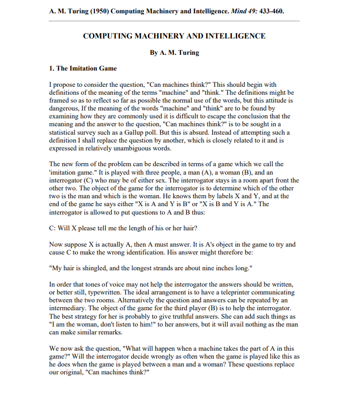
COMPUTING MACHINERY AND INTELLIGENCE，src: https://courses.cs.umbc.edu/471/papers/turing.pdf五年後的 8 月 31 日，四個研究者向洛克菲勒基金會遞了一份申請書（McCarthy 等人, 1955）。署名的是達特茅斯的 John McCarthy、哈佛的 Marvin Minsky、IBM 的 Nathaniel Rochester，以及貝爾實驗室的 Claude Shannon。第一句就是 “We propose that a 2 month, 10 man study of artificial intelligence be carried out during the summer of 1956 at Dartmouth College in Hanover, New Hampshire”。他們列出來的目標是 “An attempt will be made to find how to make machines use language, form abstractions and concepts, solve kinds of problems now reserved for humans, and improve themselves”。也就是嘗試探索如何讓機器使用語言、形成抽象概念、解決目前只有人類才能解決的問題，以及改進自身。
整份提案真正的核心是：
“The study is to proceed on the basis of the conjecture that every aspect of learning or any other feature of intelligence can in principle be so precisely described that a machine can be made to simulate it.”
這就是整個領域的創立假設：智慧可以被寫下來。而接下來這七十年，某種程度上就是在測試與實踐這句話。
申請書上也發明了一個新詞：Artificial Intelligence。
實際情況是，那個夏天也沒達成什麼共識。他們列出的那幾項問題，一項也沒解掉。真正留下來的只有 Newell 跟 Simon 帶去的 Logic Theorist，一個能證明《數學原理》（Principia Mathematica）裡定理的程式。
其中 “We think that a significant advance can be made in one or more of these problems if a carefully selected group of scientists work on it together for a summer."，後來被引用了七十年，每一次都像是當笑話引的。
1957 年，Frank Rosenblatt 在康乃爾做出感知機（Rosenblatt, 1958），第一個真的從資料裡學東西的模型。隔年七月，紐約時報報導，說這是一台電子計算機的胚胎，海軍預期它將來能走路、說話、看見、書寫、自我複製，並且意識到自己的存在。它實際上能做的只是分辨幾種簡單圖形。
1969 年，當年連署達特茅斯申請書的 Minsky，跟 Papert 一起出了《Perceptrons: An Introduction to Computational Geometry》（感知機：計算幾何學導論；Minsky 與 Papert, 1969），證明單層感知機連 XOR 都算不出來。這本書寫得很漂亮，證明也沒錯，而它把一個正在熱頭上的領域按進水裡。神經網路的經費幾乎斷了。兩年後，Rosenblatt 在四十三歲生日那天出海，帆船意外身亡。
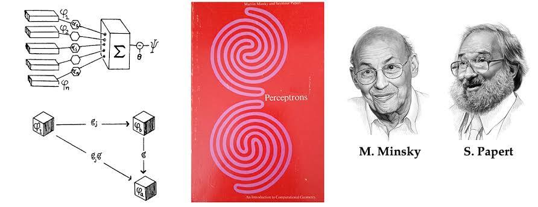
Minsky，跟 Papert 與 Perceptrons: An Introduction to Computational Geometry ，src: https://medium.com/data-science/towards-geometric-deep-learning-ii-the-perceptron-affair-fafa61b5c40a1973 年，英國政府委託的 Lighthill 報告（Lighthill, 1973）公布，結論是 AI 研究在實驗室裡看起來很好，一放到真實世界就不行。BBC 為這份報告辦了一場電視辯論，讓 Lighthill 跟幾位 AI 研究者同台對質。辯論結束之後，英國除了兩三所學校，經費全斷。
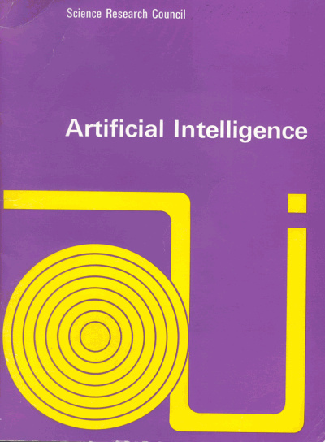
Lighthill Report - Artificial Intelligence: a paper symposium (1973) ，src: https://www.chilton-computing.org.uk/inf/pngs/smlighthill.png這段經費斷絕的日子後來被稱作第一次 AI 寒冬，大約從 1974 年持續到 1980 年。
1980 年代，AI 靠另一條路重新活了過來：專家系統。
做法是把某個領域的專家請來，把他腦子裡的判斷一條一條問出來，寫成 IF-THEN 規則，再交給推論引擎去跑。史丹佛 Edward Shortliffe 做的 MYCIN（Shortliffe, 1976）能診斷血液感染並開出抗生素處方，在一次評估裡表現不輸專科醫師；它引進的 certainty factor（把「我有八成把握」寫進推論裡）是後來所有不確定性推理的雛形。卡內基梅隆 John McDermott 在 1978 年寫的 XCON（原名 R1；McDermott, 1982）幫 DEC 配電腦組態，據說一年替公司省下數千萬美元。
這些系統的本質就是規則庫，只是規則寫得夠多、夠細，多到看起來像懂。回頭看開頭那五條差旅規則，XCON 最後長到一萬多條，而且每一條都可能跟另外幾條打架，光是讓它跟上 DEC 的產品線變動就要養一組人。
到了 1987 年，專跑 Lisp 的硬體市場垮掉，第二次寒冬開始，一直到 1993 年。那幾年裡，研究者寫經費申請時會避開 AI 這個詞，改寫成資訊科學或機器學習。
這段歷史的重點不是年份，是失敗的原因。兩次寒冬其實都失敗在同一件事上，人類的知識沒辦法用手動的方式擴充。規則寫得愈多，彼此衝突愈多，維護成本則是指數上升的。
Rich Sutton 後來在 The Bitter Lesson（Sutton, 2019）裡把這件事講成一條通則：靠算力的通用方法，最後總是贏過靠人類知識堆出來的巧妙設計。他的建議很簡單，別再想著把人類已經知道的事情寫進系統裡，去找那些能隨著算力一起長大的方法，例如搜尋跟學習。這篇只有一頁，是整篇文章的思想錨點，值得自己讀一次。
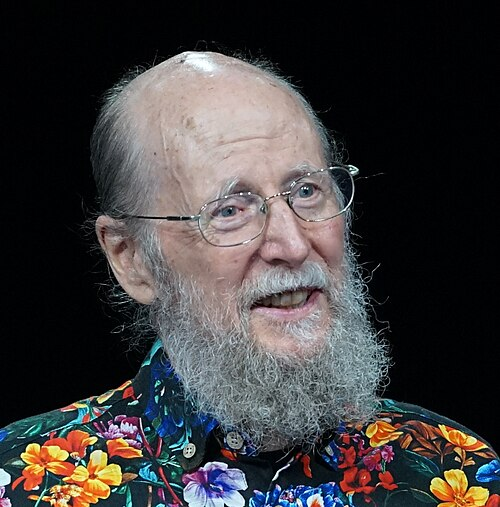
Richard Sutton，src: https://upload.wikimedia.org/wikipedia/commons/thumb/4/4b/SD_2025_-Richard_Sutton_01(cropped).jpg/500px-SD_2025_-Richard_Sutton_01(cropped).jpg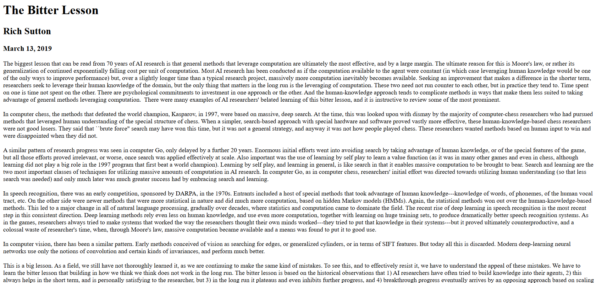
The Bitter Lesson，src: http://www.incompleteideas.net/IncIdeas/BitterLesson.html統計學習 - 不寫規則，改寫特徵
1990 年代主流玩法漸漸轉向統計方法。以前是人把判斷邏輯寫出來，現在是人準備資料跟目標，邏輯由模型自己歸納。
最有名的例子是垃圾信過濾。早期靠關鍵字規則擋，但對方把「免費」寫成「免 費」就破功了，規則永遠追不完。改用統計方法之後，人不再列關鍵字，只要標好哪些是垃圾信、哪些不是，哪些詞有鑑別度由模型自己算。
學習被分為三種：
- 監督式：給你答案，讓你學
- 非監督式：沒有答案，自己找結構
- 強化式：沒有答案，但做對了給獎勵
第三種在當時是很邊緣的分支，主要用在下棋跟控制問題上。它的理論骨架是時序差分學習（TD learning；Sutton, 1988）跟 Q-learning（Watkins, 1989；Watkins 與 Dayan, 1992），Sutton 跟 Barto 合寫的《Reinforcement Learning: An Introduction》到今天還是這個領域的標準教材。
這裡把監督式學習寫成具體的數學形式，因為後面深度學習、LLM 訓練全部是這套機制的延伸，只是規模不同。
模型是一個帶參數的函數：
其中 $x$ 是輸入（例如一封信轉成的特徵向量），$\theta$ 是模型參數（一開始是隨機初始化的一堆數字），$\hat{y}$ 是模型的預測（例如計算是垃圾信的機率）。
訓練分三步，這三步構成所有監督式學習的骨架：
第一步，定義損失函數，衡量預測 $\hat{y}$ 跟真實答案 $y$ 差多少。
例如分類問題常用交叉熵：
白話講就是：真實答案是垃圾信（$y=1$）時，模型預測的機率 $\hat{y}$ 離 1 越遠，這一項的懲罰越重。$N$ 是訓練樣本數，整個式子取的是全部樣本的平均誤差。
第二步，算梯度，也就是損失對每個參數的偏微分：
這個向量告訴我們，如果把某個參數 $\theta_j$ 稍微調大一點，損失 $L$ 會變大還是變小、變化多快。
第三步，往梯度反方向更新參數：
$\eta$ 是學習率，控制每次調整的步伐大小。步伐太大容易在最低點附近震盪甚至發散，太小則收斂得很慢。
把這三步在全部訓練資料上重複幾萬到幾百萬次，參數就會慢慢調整到「看到類似垃圾信的特徵組合，就傾向輸出高機率」的狀態。這個機制本身不複雜，複雜的是規模。
垃圾信分類器可能只有幾千個參數，今天的大型語言模型有幾千億個參數，但更新參數的原理完全一樣，只是式子裡的 $x$、$\theta$、$L$ 都換成天文數字量級的維度，也不再是每次算完整個資料集的梯度，而是用小批次（mini-batch）近似（這個變體叫隨機梯度下降，SGD，來源是隨機逼近法（Robbins 與 Monro, 1951）；今天大模型所用的 Adam（Kingma 與 Ba, 2014）也是其後來延伸的方法之一）。
另外一個核心議題是過擬合跟泛化，白話講就是指背答案跟真的學會的差別，到現在還是所有機器學習的核心問題。
這個問題具體長什麼樣子？如果參數夠多、訓練夠久，模型有能力把訓練誤差 $L_{\text{train}}$ 壓到接近零，包括把雜訊也一起背下來。這種模型在訓練資料上幾乎不犯錯，但在沒看過的資料上算出來的誤差 $L_{\text{test}}$ 卻明顯更高，兩者的落差 $L_{\text{test}} - L_{\text{train}}$ 就是過擬合的量化指標。
實務上判斷過不過擬合的標準做法，是把資料切成訓練集跟驗證集。只用訓練集調參數，然後用模型沒看過的驗證集去算 $L_{\text{val}}$。如果 $L_{\text{train}}$ 一路下降但 $L_{\text{val}}$ 反而回升，那個轉折點就是模型開始背答案的訊號。常見對策包括限制模型複雜度、正則化（在損失函數裡加一項懲罰過大的參數）、或加更多訓練資料來稀釋雜訊。後來還多了 dropout（Srivastava 等人, 2014）。
而在這樣的框架下，代表的方法有 SVM（Cortes 與 Vapnik, 1995）、決策樹、隨機森林（Breiman, 2001）、boosting（Freund 與 Schapire 的 AdaBoost, 1997）等。這條線到今天都沒斷，在表格式資料上，XGBoost（Chen 與 Guestrin, 2016）還是常常打得贏神經網路。
但這樣做法的代價是讓特徵工程變成新的瓶頸。當時做電腦視覺的人，大半時間花在設計手工特徵上，想辦法用數學告訴電腦「什麼叫做邊邊」「什麼叫做角點」。如果想讓它認出貓，得先自己想清楚貓在幾何上有什麼特徵，再把那個想法寫成程式，也就是人工設計 $x$（特徵抽取函數），模型只負責學 $x \to y$ 這段映射。
這個年代，AI 是人類知識的副本
機器開始自己學（2012–2016）
類神經網路與深度學習
深度學習做的事很單純，不要人告訴它什麼是邊緣，讓網路自己從原始資料學表徵。
前面統計學習那段的模型 $f(x;\theta)$，在神經網路裡被換成很多層疊起來。單一層做的事是：
$W$ 是這一層的權重矩陣、$b$ 是偏移量，兩者都是要被訓練的參數；$\sigma$ 是非線性函數，例如 ReLU：$\sigma(z) = \max(0, z)$，把負數壓成零。整個網路就是把這個操作疊很多次：
單獨一層很弱（本質上只是線性變換加一個開關），但疊個幾十層之後，前面幾層學到的往往是簡單的局部模式（邊緣、顏色對比），中間層學到的是這些模式的組合（角、紋理），愈後面的層學到的愈抽象（眼睛、耳朵、最後是「貓」這個概念）。
關鍵在於，每一層的 $W$、$b$ 該學成什麼樣子，完全沒有人指定，全部由同一個損失函數 $L(\theta)$（$\theta$ 這裡代表所有層的 $W_1, b_1, \dots, W_L, b_L$）跟梯度下降去決定。哪一層該偵測什麼特徵，是被誤差訊號反推出來的，不是設計出來的。
反推的方法叫反向傳播（backpropagation），本質上是連鎖律（chain rule）的系統性應用。它的雛形 1970 年代就有人寫出來（Linnainmaa, 1970；Werbos, 1974），但真正讓它進主流的是 Rumelhart、Hinton 與 Williams（1986）在 Nature 上的論文。今天所有深度學習框架的 autograd，做的還是同一件事。從最後一層算起：
每一層的梯度都仰賴後面一層算出來的梯度往前傳，一路傳到第一層。這在數學上跟前面統計學習講的梯度下降是同一件事，差別只在於函數疊了很多層，所以需要一套有效率的方式把梯度一路算回去，而不是每個參數各自獨立算一次。
這套機制其實 1986 年就有了，但沉寂了將近三十年。原因不是想法不對，是三個條件當時都還沒到位：夠大的標註資料集、夠強的算力、還有讓深層網路訓練得動的演算法細節（例如 ReLU、初始化方式）。少了任何一個，深度網路不是訓練不動，就是訓練得動但沒有比淺層模型好。
ImageNet 與 AlexNet - 深度學習的重生與崛起
2009 年，普林斯頓的 Fei-Fei Li（李飛飛）團隊發表了一個資料集（她同年才轉到史丹佛）。當時電腦視覺領域的人都在比演算法，很少人覺得資料本身值得投入。她的做法是反過來，先把資料做大。
最後 ImageNet（Deng 等人, 2009）蒐集了一千四百多萬張圖片、兩萬多個類別，而且每一張都要有人確認標籤對不對。他們用 Amazon Mechanical Turk 把工作發包出去，動員了數萬人次、花了兩年多才標完。
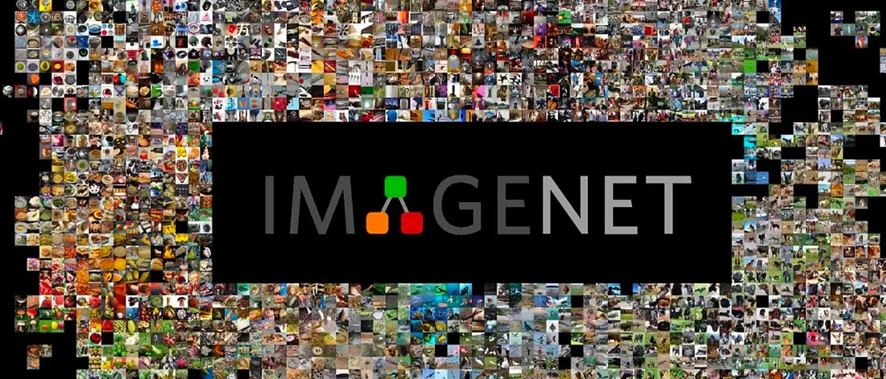
ImageNet，src: https://miro.medium.com/1\S1ob5XC6W8O8JC_x0oVpsw.jpeg2010 年開始，他們用其中一千個類別、一百二十萬張圖辦了一個年度競賽（ILSVRC），評分方式叫 top-5 錯誤率：模型可以猜五個答案，只要正確答案在裡面就算對。連續兩屆的冠軍都是「手工特徵加上分類器」那一路，錯誤率卡在 26% 上下，兩年幾乎沒有進步。
2012 年，多倫多大學的 Alex Krizhevsky、Ilya Sutskever 跟 Geoffrey Hinton 做的 AlexNet（Krizhevsky 等人, 2012），在 ImageNet 上把 top-5 錯誤率從 26% 砍到 15%。這個差距大到讓整個領域在一年內轉向，同時大家開始注意到深度學習的影響力。
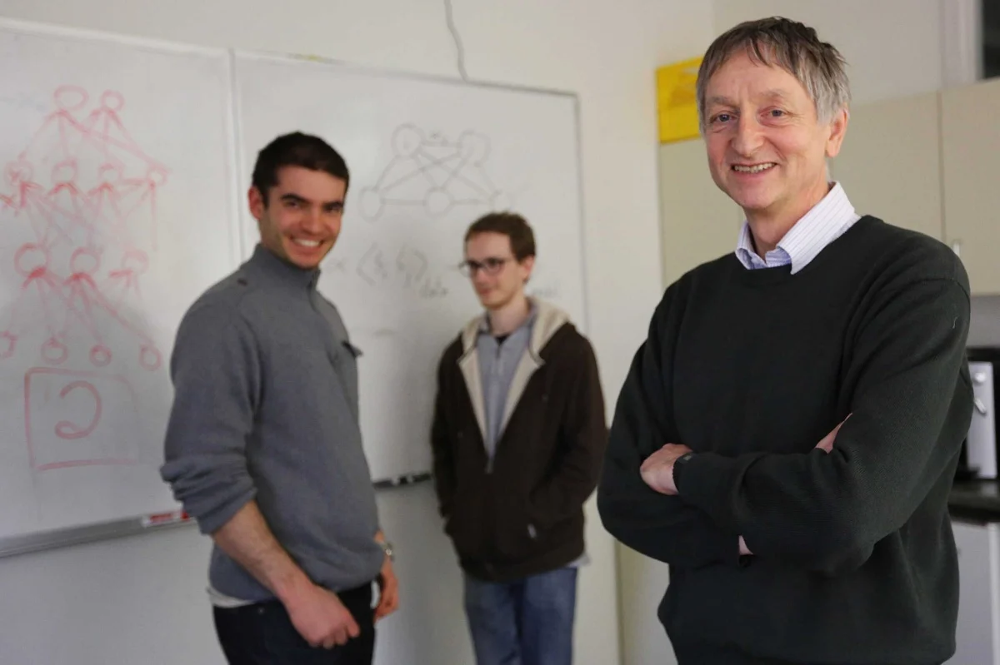
Alex Krizhevsky、Ilya Sutskever 和 Geoffrey Hinton，src: https://mashdigi.com/alexnet-a-convolutional-neural-network-that-has-great-significance-for-modern-artificial-intelligence-was-open-sourced-earlier-and-preserved-by-the-computer-history-museum-in-california/#google_vignetteAlexNet 本身是一個 8 層的網路：5 層卷積加上 3 層全連接，約 6000 萬個參數。以現在的標準來看小得不成比例（現代 LLM 動輒是幾百億到幾千億參數），但在 2012 年，這已經是當時最大的網路之一。
關鍵設計有幾項：
- ReLU 激活函數：在這之前，主流用的是 Sigmoid 與 Tanh，在輸入很大或很小時梯度會接近零，讓反向傳播很難有效更新參數。ReLU 在正區間的梯度固定為 1，讓訓練快上好幾倍，也讓更深的網路訓練得動。
- Dropout：在全連接層隨機關掉一部分神經元，避免模型過度依賴某幾條路徑，前面統計學習那節提過的過擬合對策，在這裡第一次被大規模驗證有效。
- 雙 GPU 訓練：在此之前神經網路多半跑在 CPU 上。AlexNet 用兩片 GTX 580（每片 3GB 記憶體）分擔訓練，跑了六天。
這些手法單獨看都不新奇，但組合在一起，第一次讓一個深層網路在大規模資料上真的訓練得動、訓練得快、而且不過擬合。
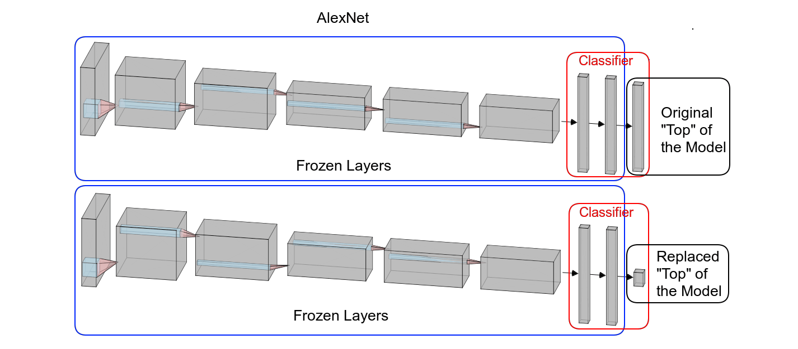
AlexNet，src: https://upload.wikimedia.org/wikipedia/commons/1/1d/AlexNet_architecture.png?utm_source=en.wikipedia.org&utm_campaign=imageinfo&utm_content=original還有一件事值得記，AlexNet 的架構主體並不是創新，而是 Yann LeCun 1989 年就提出的卷積網路（CNN；LeCun 等人, 1989），而卷積這個結構本身還可以再往前追到 Fukushima 1980 年的 Neocognitron。只是等到 2012 年才等到能餵飽它的資料跟算力。現在看起來 LeCun 的想法在當時確實是很有前瞻性，現在也是哈哈哈。
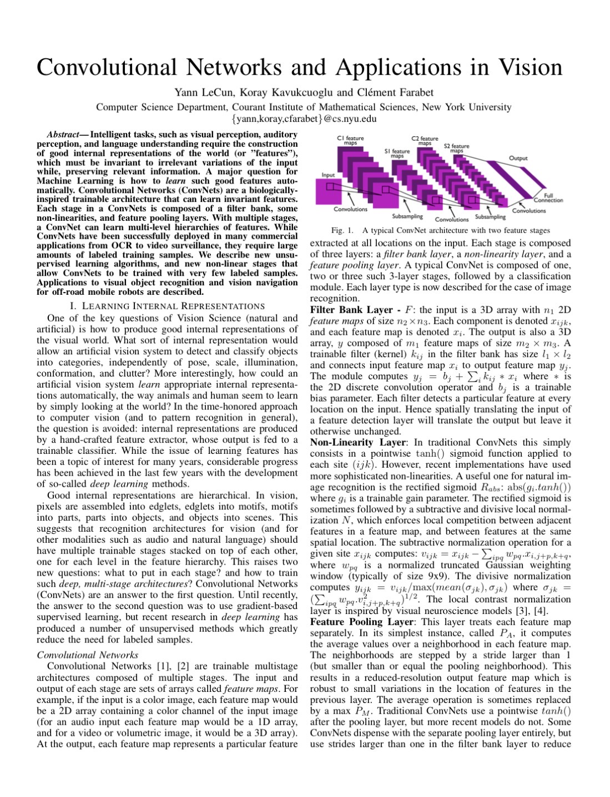
LeCun CNN，src: http://yann.lecun.com/exdb/publis/pdf/lecun-iscas-10.pdf2012 年通常被當成深度學習的轉捩點，而 2013 年是它真正擴散開來的一年。AlexNet 的成功之後，各路研究者確認了這條路線可行，開始往不同方向試。同年提出的變分自動編碼器（VAE，Kingma 與 Welling, 2013）把生成模型放進一個機率框架裡，讓模型不只能辨認，還能生成新的、統計上合理的圖片，這是後來擴散模型的其中一條先驅路線。
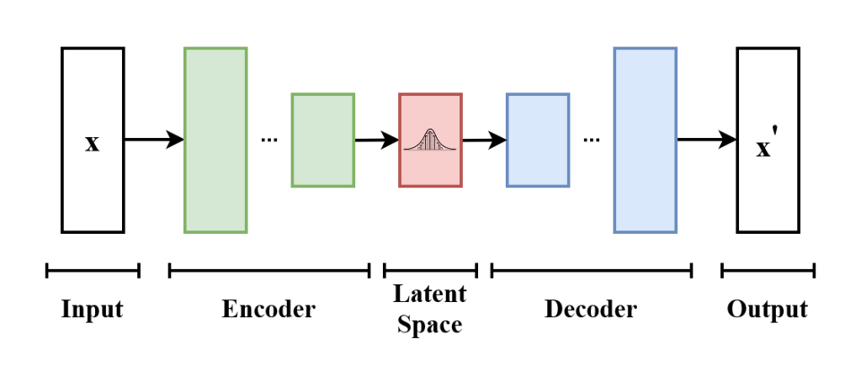
VAE，src: https://zh.wikipedia.org/zh-tw/变分自编码器2014 年，Goodfellow 等人提出生成對抗網路（GAN，Goodfellow 等人, 2014）：兩個網路互相對抗，一個負責生成假圖片，一個負責分辨真假，兩邊在訓練中互相進步。思路漂亮，一度是生成圖像的主流做法，但訓練不穩定是它的死穴，幾年後被 diffusion 模型取代。
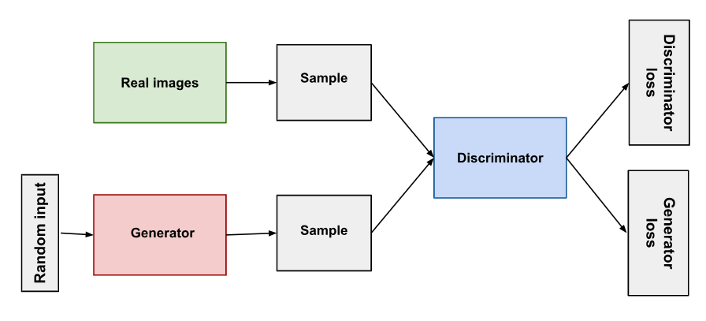
GAN，src: https://developers.google.com/machine-learning/gan/gan_structure2015 年有兩件事同時發生。ResNet（何愷明等人，微軟研究院, 2015）解決了深層網路訓練不動的問題：把每一層改成學習「殘差」而不是整個映射，讓網路可以疊到一百多層還訓練得動，是後來所有深度網路的標準做法之一。同一年，NLP 領域也開始出現突破。attention 機制（Bahdanau、Cho 與 Bengio, 2014，第三部會細講）開始被更廣泛採用，序列到序列模型在機器翻譯上的表現明顯提升，為兩年後的 Transformer 鋪好了路。
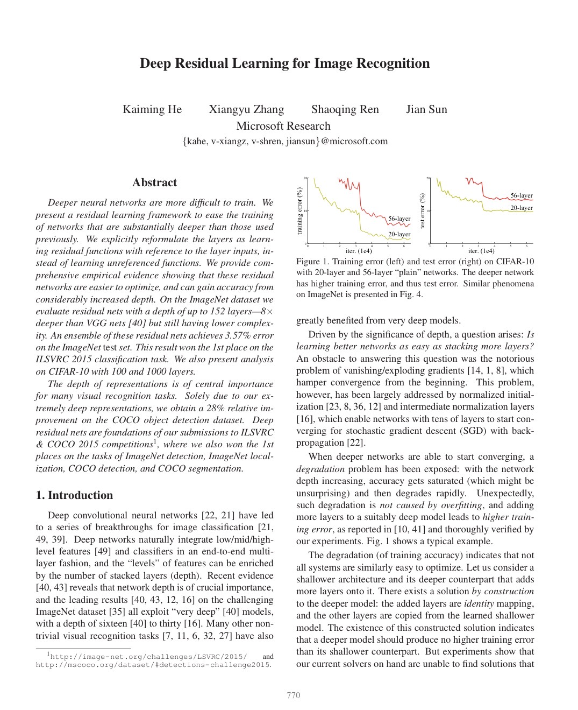
ResNet，src: https://openaccess.thecvf.com/content_cvpr_2016/papers/He_Deep_Residual_Learning_CVPR_2016_paper.pdf2016 年 3 月，AlphaGo（Silver 等人, 2016）以四比一擊敗李世石。
圍棋長年被當成靠規則寫不出來的代表。盤面組合比宇宙的原子還多，而且好棋壞棋很難用特徵描述。過去幾十年的電腦圍棋，主力是請職業棋士把定石、手筋、形勢判斷寫成評估函數，進展緩慢。
DeepMind 的做法是把人類知識的比重一路往下降。第一代 AlphaGo 還用人類棋譜做監督式學習當起點，再用自我對弈的強化學習加上蒙地卡羅樹搜尋往上疊。一年後的 AlphaGo Zero（Silver 等人, 2017）把人類棋譜整個拿掉，只給規則，從隨機下棋開始自我對弈，三天之後就贏過了打敗李世石的那一版。
搜尋加學習贏過人類知識，而且是把人類知識完全移除之後贏得更多。Sutton 在 The Bitter Lesson 裡舉的第二個例子就是這件事，排在他開篇的電腦西洋棋之後。
回頭看的話，這兩次轉向的形狀其實很像，每一次都是放棄一種大家原本以為非做不可的手工介入，而且放棄之後效果都比之前好。
這個年代，AI 是專注一件事的專才
規模的時代（2017–2025）
Transformer
第二部的模型都是專才，輪到語言的時候，卡住的地方一直是順序。句子有先後，而在此之前所使用的 RNN 為了處理先後，只能一個字一個字往下算，第一千個字要等前面九百九十九個字算完。這在單機上只是慢；但當你想同時動用一千張 GPU 的時候，它是直接把路堵死，因為算力再多也沒地方擺。
2017 年，改變整個 AI 領域的那篇重磅論文出來了：Google 團隊的 Attention Is All You Need（Vaswani 等人, 2017）。
不過要先澄清一件常被講錯的事：attention 不是 2017 年發明的。它在 Bahdanau、Cho 與 Bengio 2014 年的機器翻譯論文就有了，當時是為了解決 RNN 把整個句子壓進一個固定長度向量的瓶頸。這篇論文真正做的是減法：把遞迴整個拿掉，只留下 attention。
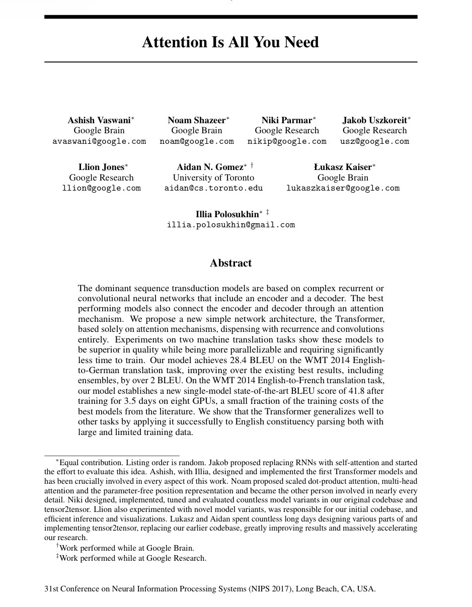
Transformer paper，src: https://arxiv.org/abs/1706.03762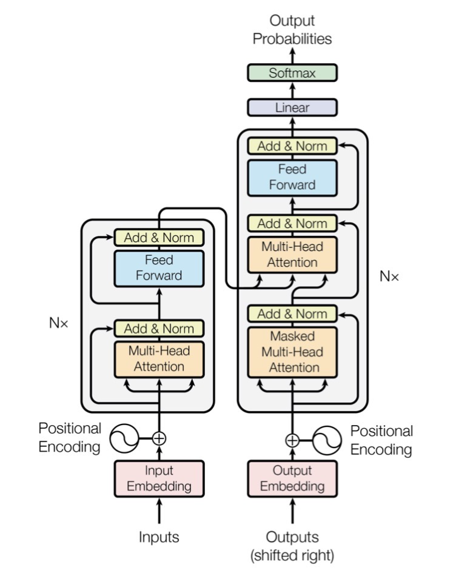
Transformer Architecture ，src: https://arxiv.org/abs/1706.03762很多文章講到這裡就說效果更好，但機制才是重點。
attention 這個動作本身只有一行：
其中 $Q = XW_Q$、$K = XW_K$、$V = XW_V$，都是把同一份輸入 $X$ 用三組不同的權重投影出來的。拆開看做了三件事：
- $QK^{\top}$ 算出一個 $n \times n$ 的矩陣，每一個 token 對每一個 token 都算一次相似度。context window 為什麼貴，答案就在這裡：成本是 $O(n^2)$，不是 $O(n)$。
- 除以 $\sqrt{d_k}$ 是因為內積的變異數會隨著維度長大，不縮放的話 softmax 會飽和、梯度趨近於零。
- softmax 之後每一列加起來是 1，那就是「這個 token 該分多少注意力給其他 token」的權重，再拿去對 $V$ 加權求和。
decoder-only 的模型（GPT 那條路）只是多加一個遮罩，在 softmax 之前把分數改成：
未來位置的權重就被壓成 0。後面會講到 BERT 看得到左右文、GPT 只看得到左邊，差別就是這一行加不加。
而它真正的貢獻不在效果。RNN 必須一個字一個字算，因為第 n 步要等第 n-1 步的結果，這在數學上就不可能平行。Transformer 讓所有位置同時計算，於是它能吃下一整座 GPU 叢集。原論文的 Table 1 把這件事講得很清楚：self-attention 每一層的計算量是 $O(n^2 d)$，RNN 是 $O(n d^2)$，序列長度 $n$ 比維度 $d$ 短的時候前者其實還比較便宜，要等 $n$ 長到超過 $d$ 才反過來。但真正關鍵的是另一欄，需要串行執行的步驟從 $O(n)$ 降到 $O(1)$。省不省要看句子多長，能攤開來算才是它真正改變的事。
可平行化才是它真正的貢獻，沒有這一點，後面所有的 scaling 魔法都不會發生。
想補視覺化理解的話，The Illustrated Transformer 跟 3Blue1Brown 的系列 都是值得一看的內容。
Tokenizer：token、編碼與解碼
架構講完了，但有一個更基本的問題還沒交代：一句文字，到底是怎麼變成矩陣運算吃得下的東西的？
這一節看起來瑣碎，可是它一次解釋掉好幾個你每天都會遇到的怪現象：為什麼中文的 API 帳單比較貴、為什麼同樣的 context window 中文塞得比較少、為什麼同一個 prompt 問兩次答案不一樣，還有為什麼模型數不出 strawberry 有幾個 r。
這裡是很多人的認知斷層。模型看不到字，它只看得到數字。
第一步是切成 token。文字先用 BPE（byte pair encoding，本來是 Gage 1994 年的壓縮演算法，Sennrich 等人 2016 年把它搬到機器翻譯上）這類演算法切成 subword，再對到整數 ID。這個過程你可以自己去 OpenAI Tokenizer 玩，貼一段中文再貼一段英文，看 token 數的差別。中文常常一個字就吃掉一到兩個 token，英文一整個單字才一個。
這直接解釋了為什麼中文 API 比較貴，以及為什麼同樣的 context window，中文可以塞的內容比較少。
順便也解掉那個經典謎題。模型數不出 strawberry 有幾個 r，不是因為它笨，是因為它根本沒看到字母，它看到的是幾個 token 編號。
第二步是變成向量，也就是 embedding。每個 token ID 去查一張表，換成一串浮點數，也就是語意空間裡的一個座標。word2vec（Mikolov 等人, 2013）那個經典的 king - man + woman ≈ queen 講的就是這個空間有結構。
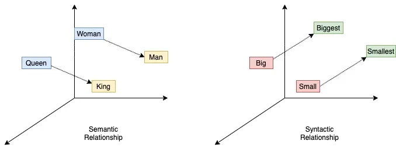
word2vec，src: https://medium.com/data-science/word2vec-research-paper-explained-205cb7eecc30這一步不能跳過，因為 attention 做的事情，正是在這個向量空間裡計算每個 token 該去看哪些其他 token、看多重。沒有 embedding 這層，attention 就只剩下比喻。
第三步是解碼回來，模型最後一層吐出的是每個 token 的分數（logits），要先過 softmax 變成機率分布，才能拿去取樣：
$z_i$ 是第 $i$ 個 token 的分數，$T$ 是溫度。$T \to 0$ 時機率會集中到最高分的那一個，等於每次都挑同一個字；$T$ 越大分布越平，越容易選到冷門的 token。實務上還會再加 top-k（只留分數最高的 k 個）或 top-p（只留累積機率到 p 為止的那些）把長尾砍掉。
這就是為什麼同一個 prompt 問兩次，答案不一樣。不是模型不穩定，是這一步本來就在抽樣。
實際上，模型處理的不是文字，是向量。很多看起來很怪的行為，回到這一點就解釋得通。
預訓練，讓 AI 模型先上個學
有了架構，下一個問題是知識要從哪裡進去。而當時這個問題的答案很貴，貴到限制了整個領域能做的事。
Transformer 只是一個架構，它本身不懂任何事，就像一顆空的大腦。真正讓它變成「懂很多事」的，是 2018 年出現的另一個想法。
在那之前，做 NLP 的標準流程是一個任務訓一個模型。要做情感分析就標一批情感資料，要做問答就標一批問答資料。瓶頸永遠是標註：人工標註又慢又貴，而且每換一個任務就要重來。
2018 年，Google 的 BERT（Devlin 等人, 2018）跟 OpenAI 的 GPT-1（Radford 等人, 2018）幾乎同時提出同一個解法的兩個版本：先在大量沒有標註的文本上做自監督預訓練，再用少量標註資料微調。
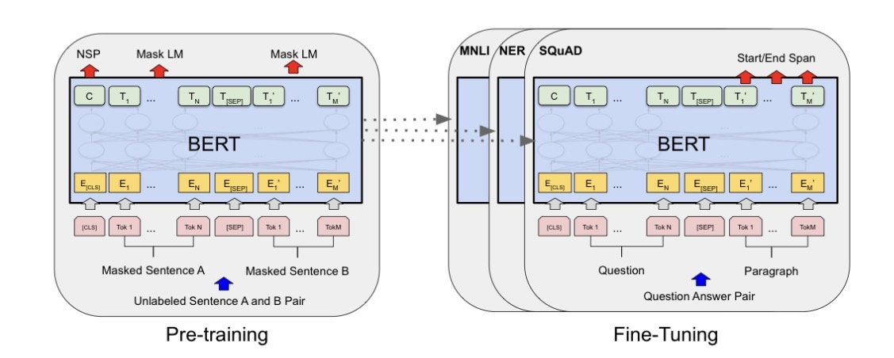
BERT，src: https://arxiv.org/abs/1810.04805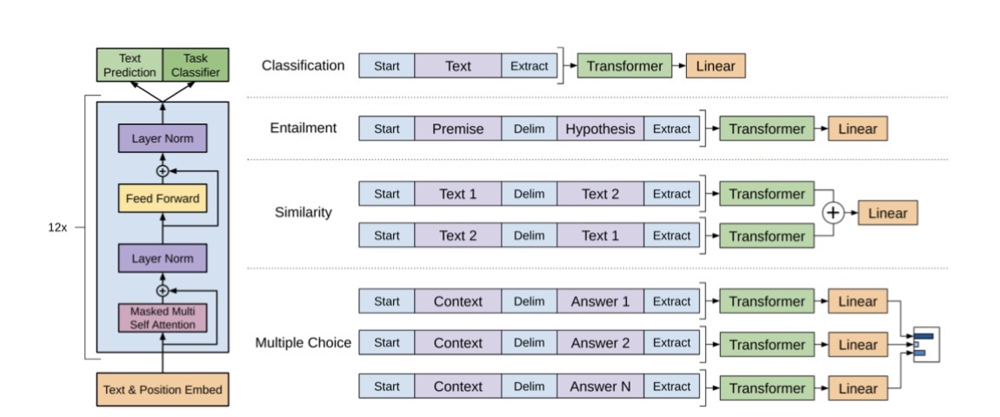
GPT-1，src: https://cdn.openai.com/research-covers/language-unsupervised/language_understanding_paper.pdf自監督的意思是，答案就藏在資料本身裡面，不需要人來標。
- BERT 用的是克漏字：把句子裡的字遮掉一部分，讓模型猜。
- GPT 用的是接龍：給前面的字，猜下一個字。兩種都不需要任何人工標註，於是整個網際網路瞬間變成訓練資料。
這裡值得把式子寫出來，因為它就是第一部那條交叉熵，一個字都沒變。GPT 的接龍寫成損失函數是：
$x_{<t}$ 是前面所有的 token，模型要讓真實出現的那個 $x_t$ 機率越高越好。BERT 的克漏字只是把總和的範圍換掉，改成只算被遮住的那些位置 $M$：
所以自監督其實不是一種新的學習範式，它就是監督式學習，只是標籤 $y$ 不用人寫，直接從資料裡挖出來：接龍的標籤是下一個字，克漏字的標籤是被遮掉的字。第一部那三個步驟（算損失、算梯度、往反方向更新）在這裡原封不動，$x$、$\theta$、$L$ 的維度變大而已。真正變的只有一件事，標註成本歸零，於是資料量可以放大好幾個數量級。
這一步的意義比它聽起來大得多。它把「知識」跟「任務」拆開了。預訓練學語言本身，微調才學特定任務。同一個預訓練模型可以微調出幾十種下游應用，成本大幅降低。
兩者的分歧在後來變得很重要。BERT 是 encoder-only，看得到整句話的左右文，擅長理解；GPT 是 decoder-only，只能看左邊，擅長生成。當時 BERT 在各種理解類的榜單上大幅領先，多數人以為那才是主流，但是最後贏的是 GPT 那條路。
規模，以及一個沒人預期的副作用
預訓練解決了知識從哪來，但沒有回答一個更貪心的問題：如果就這樣一直放大下去，會怎麼樣？
按常識，任何方法放大到某個程度都會遇到報酬遞減，當時多數人也是這樣預期的。結果接下來發生的事情不是模型變得好一點，是它多出了一種原本沒有的能力。
接下來兩年 OpenAI 做的事情很單純：把同一個東西放大。
GPT-2（Radford 等人, 2019，15 億參數）當時因為「可能被濫用來生成假新聞」而分階段釋出，現在回頭看有點好笑，但那是第一次有人認真討論語言模型的風險。
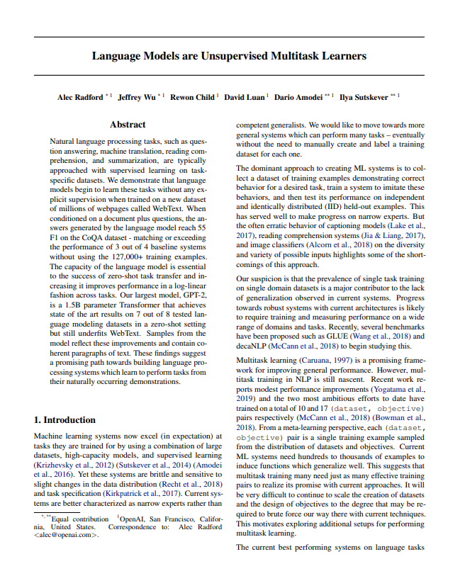
GPT-2，src: https://cdn.openai.com/better-language-models/language_models_are_unsupervised_multitask_learners.pdfGPT-3（Brown 等人, 2020，1750 億參數）帶來的是一個沒人預期的副作用：規模大到某個程度之後，模型不需要微調了。
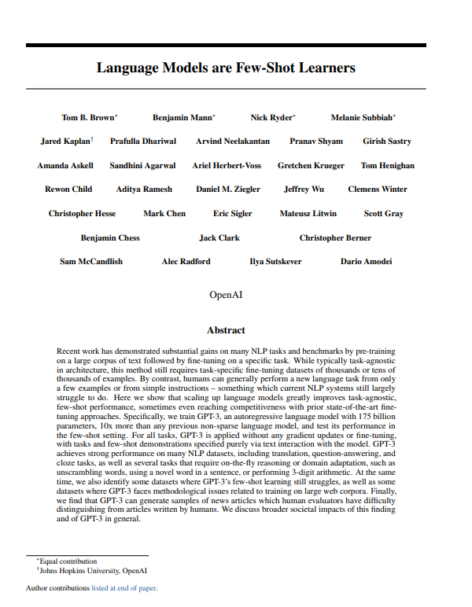
GPT-3，src: https://arxiv.org/abs/2005.14165你只要在 prompt 裡寫幾個範例，它就會照做，這叫 in-context learning，徹底改變了使用模型的方式。
而規模的量變帶來質變這個觀察，也直接催生了接下來要談的 Scaling Laws。
規模的公式化：Scaling Laws
放大有效，那下一個問題就非常實際了：該放大什麼、放大到多少？
在一次訓練動輒幾億美元的規模上，這件事不能用試的。你需要在按下開始之前，就知道這筆錢會換到什麼。
Scaling Laws（OpenAI，Kaplan 等人, 2020）的發現是，損失跟參數量、資料量之間是乾淨的冪次律，畫在 log-log 圖上是一條直線：
$N$ 是參數量，這件事本身就很反直覺。效能居然可以外推預測。於是「再花十倍的錢會得到多好的模型」變成一個可以先算出來的問題，這才是各家敢一次砸幾億美元下去訓練的前提。
真正被廣泛接受的就是這一條：規模上去，損失會以可預測的方式下降。
推論工程：RoPE、FlashAttention、MoE、KV cache
前面講的全部是怎麼把模型訓練出來。但訓練完之後它還要真的跑給人用，而這一層的成本結構完全不同：訓練是一次性的支出，推論是每一次對話都要重付一遍。
接下來這幾個技術看起來沒什麼關聯，其實都在解同一個問題：同樣一個模型，怎麼跑得更快、吃更少記憶體，或是同樣的錢能服務更多人。
RoPE（蘇劍林等人, 2021）處理位置資訊，讓模型知道詞序，也是現在長上下文能力的基礎。FlashAttention（Tri Dao 等人, 2022）是最漂亮的一篇，它沒有改任何數學，只是改了記憶體的存取順序，然後快好幾倍。MoE 是稀疏化，概念可以追到 Jacobs 等人 1991 年的 mixture of experts，Shazeer 等人 2017 年把它做成稀疏門控版本，後來的代表作是 Switch Transformer（Fedus 等人, 2021），現在的前沿模型幾乎清一色都是。
還有推論這一層，vLLM 的 PagedAttention（Kwon 等人，UC Berkeley, 2023）把 KV cache 當成作業系統的分頁問題處理。我一直覺得推論是被寫得最少的一層，但它其實是實際部署時最痛的地方。
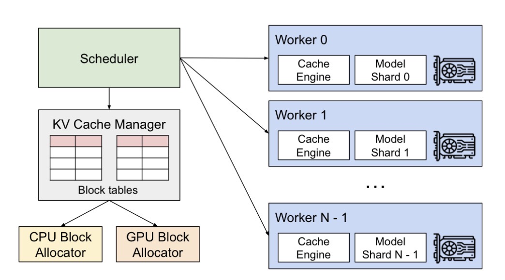
vLLM system overview，src: https://arxiv.org/abs/2309.06180從聽話到推理：RLHF 到 RLVR
預訓練完的模型知道很多事，但它不會回答問題，它只會接龍。你問它「法國的首都是哪裡」，它很可能回你「德國的首都是哪裡？義大利的首都是哪裡？」，因為在網路上，這種句子後面接的常常就是另一個問句。
所以聽話不是模型天生就有的，是後天再訓練出來的，而會推理又是另外一次獨立的突破。這兩件事常被混在一起講，分開之後很多事情就通了。
RLHF 的技術源頭是 Christiano 等人（2017）的 Deep RL from Human Preferences（當時拿來教虛擬機器人後空翻），InstructGPT（OpenAI，Ouyang 等人, 2022）則是把它用在語言模型上的定義性論文，也是 ChatGPT 真正的來源。
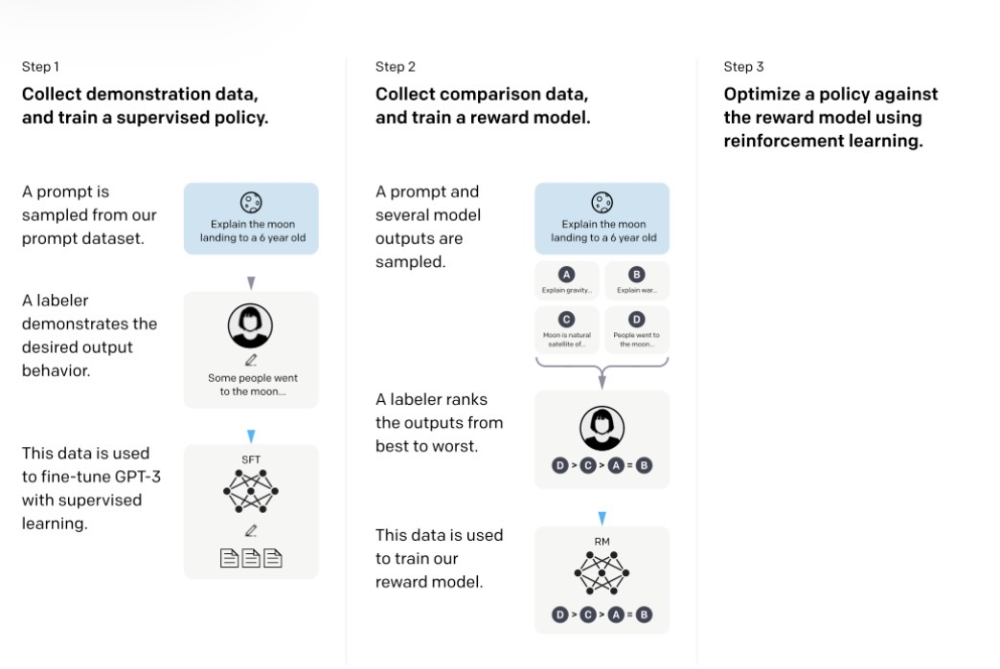
RLHF，src: https://arxiv.org/abs/2203.021552022 年 11 月 30 日，OpenAI 把這套東西包成一個聊天介面放出來，取名 ChatGPT。技術上它沒有比 InstructGPT 多什麼新東西，真正的變化在介面：把「呼叫 API、調參數、寫 prompt」變成「打字」。五天破百萬使用者，兩個月破一億。技術史上它不算突破，但後面所有的資本、算力、監管討論，都從這一天開始算。
 ChatGPT 使用者介面截圖。2022 年底發布的 ChatGPT 標誌著自然語言時代的起點，開發者只需用日常語言下達指令，AI 便能理解意圖並轉譯為程式碼。src: https://commons.wikimedia.org/wiki/File:ChatGPT.png
ChatGPT 使用者介面截圖。2022 年底發布的 ChatGPT 標誌著自然語言時代的起點，開發者只需用日常語言下達指令，AI 便能理解意圖並轉譯為程式碼。src: https://commons.wikimedia.org/wiki/File:ChatGPT.png
後來 DPO（Rafailov 等人，史丹佛, 2023）出現，證明不用跑 RL 也能做到類似的事，工程門檻降了一大截。
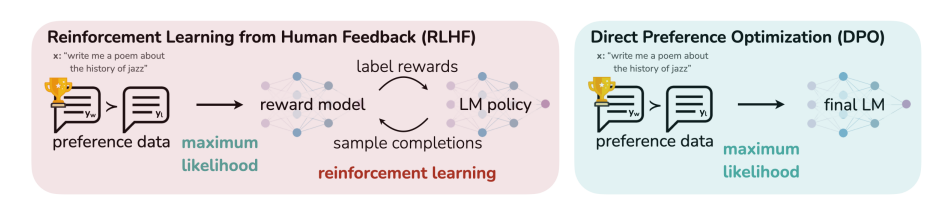
DPO，src: https://arxiv.org/abs/2305.18290真正的轉折點是 DeepSeek-R1（DeepSeek-AI, 2025）。RLVR，也就是用可驗證的獎勵去做強化學習，證明了長程、多步驟的決策能力是可以被訓練出來的。
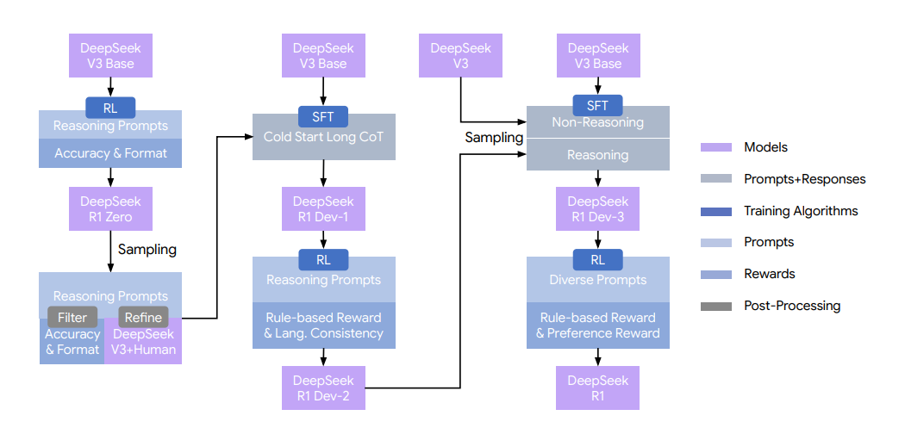
DeepSeek-R1，src: https://arxiv.org/abs/2501.12948想深入的話，Lilian Weng 的 Why We Think 是 test-time compute 這條線最完整的整理。
同一套邏輯往不同領域擴散
到這裡為止講的都是語言。但這套方法論其實不挑領域：只要你的問題能改寫成「給大量例子、讓模型自己歸納」就有機會。
2021 到 2022 年間，有幾件看起來彼此無關的事情陸續發生，事後看都是同一套邏輯往不同領域擴散。
AlphaFold2（Jumper 等人，DeepMind, 2021）在 CASP14 比賽中遠遠優於其他對手，預測結果接近實驗測定的準確度，解決了困擾分子生物學五十年的蛋白質結構預測問題。這跟 ImageNet 那套邏輯一樣：不要人告訴它蛋白質怎麼折疊，給它序列跟已知結構，剩下的自己歸納。有人把它稱作生物學的 ImageNet 時刻，這個比喻還蠻恰當。它證明 scaling 這套方法不只能用在語言或圖像上，科學問題也行得通。
DALL-E（Ramesh 等人，OpenAI, 2021 年 1 月）第一次讓人看到文字描述直接變成圖像，而且變得不單純是拼貼現成元素，而是真的理解文字裡的概念並重新組合。它的架構是離散 VAE 加上自迴歸 Transformer，把圖片壓成一串離散 token，再像接龍一樣生成。同年的 CLIP（Radford 等人，OpenAI, 2021）用四億組圖文配對把圖與文字對齊到同一個向量空間，但在 DALL-E 這一代裡它只負責重排序：模型一次取樣五百多張候選圖，CLIP 負責挑出最符合描述的那幾張。要到 2022 年的 DALL-E 2，CLIP 的向量空間才真的變成生成的地基。
GitHub Copilot（GitHub, 2021 年 6 月進入技術預覽）是第一個大規模商用的 AI 程式碼助手，底層用的 Codex 模型是 GPT-3 的後代。它一開始只是自動補全，還不是 agent，但它讓 AI 寫程式碼這件事第一次變成日常開發流程的一部分。
Stable Diffusion（Rombach 等人, 2022，Stability AI，2022 年 8 月釋出）是第一個真正開源、能在消費級 GPU 上跑的 diffusion 文生圖模型。它把圖像生成從少數公司的 API 手中拉下來，任何人都可以下載模型自己跑、自己微調，是下一節要講的開源生態在圖像領域的先驅。
開源把門打開
前面講的模型全部握在少數幾家公司手上。你可以用，但只能透過別人的 API 用，而且用什麼、怎麼用、哪天漲價或關掉，都不是你能決定的。
這裡要倒帶回 2023 年，因為有件事跟技術無關，卻決定了今天一半的生態。
2023 年 2 月，Meta 釋出 LLaMA，原本只給研究用途，結果權重在一週內外流。接下來幾個月發生的事情很難複製：微調版本、量化版本、能在筆電甚至手機上跑的版本，一個接一個冒出來。同年 7 月的 Llama 2 干脆給了商用授權，之後 Mistral、Qwen、DeepSeek 接著跟上。
意義不在於開源模型有多強，它們一直落後 SOTA 模型一到兩代。意義在於選項出現了。我們不一定要呼叫別人的 API，想要資料不出境、想針對自己的領域微調、想把成本壓到極低，這三件事從 2023 年起才真的開始能夠做得到了。
這個年代，AI 是可以對話的助手
交出執行權：Agent
到這裡，模型已經能理解你在說什麼，也能把回答寫得很好。回到開頭那個東京行程任務，它現在可以把七天的行程寫得非常漂亮，列出候選景點、推薦餐廳、甚至幫你比較兩家旅館的優缺點。但它訂不了任何一張機票。它沒有手，也沒有上次對話的記憶，每次開新對話，它都從零開始。
因為到目前為止，所有的進步都發生在同一件事情上：讓模型更會說。從統計學習到深度學習到 Transformer 到 RLHF，每一步都在讓它理解得更好、回答得更對、語氣更接近人。但「說得很好」跟「做得到」中間，隔的不是一點點，是一整個層級。一個只能生成的模型，怎麼變成一個能連到外面世界、連續執行、自己決定下一步的東西？
這就是接下來要回答的問題。它看得到什麼（context）、它碰得到外面什麼（tool）、它記得住什麼（memory）、以及你怎麼指揮這一整套、讓它邏輯一致地運作（engineering）。
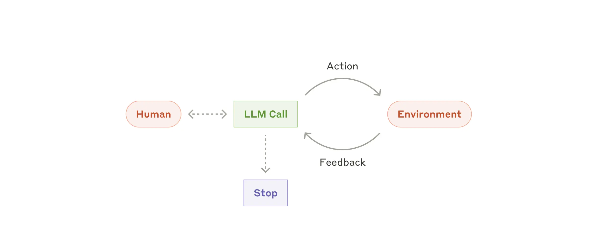
src: https://www.anthropic.com/engineering/building-effective-agents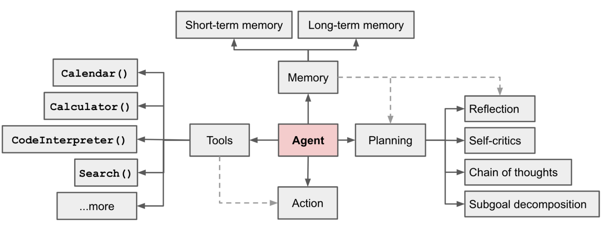
src: https://lilianweng.github.io/posts/2023-06-23-agent/上下文（Context）
要讓模型從「會回答」變成「會做事」，第一個要面對的不是它夠不夠聰明，是它到底看得到什麼。
agent 的每一個動作都發生在一次生成裡，而生成能依據的東西非常有限。後面講的工具、記憶、迴圈，全部都在繞著這個邊界打轉，所以得先把它講清楚。
模型每次生成，能參考的就只有當下餵進去的那串 token。這串東西就是 context，而它的長度上限叫 context window。
先破除一個迷思：context window 不是愈大愈好。token 一多，模型從裡面準確取用資訊的能力反而會下降，這個現象有人叫它 context rot。
除了變笨，還有一個很現實的理由：貴。服務端要把每個 token 的 K 跟 V 存下來，好讓下一步不用重算（這就是 KV cache），它所占的記憶體跟 context 長度成正比，而且每一個同時進行的對話各要存一份。一個十萬 token 的對話，光快取就可能吃掉數 GB 的顯卡記憶體。所以塞滿視窗不是只有模型變笨，同時讓每一輪變慢、變貴，也限制了同一台機器能同時服務多少人。
所以工程目標不是把它塞滿，是找出最小的、訊號最強的那組 token。而且實際上要注意的是，context 是臨時的，session 關掉就沒了，模型的權重不會因為這次對話而改變。
工具（Tool）
到目前為止，模型能做的事仍然只有一件：生出下一個 token。
要讓它真的動手，得在生成跟外面的世界之間接一條線。這一節講的就是那條線，以及它後來怎麼變成一套大家共用的標準。
函式呼叫（Function Calling）
模型輸出一個結構化的呼叫意圖，由外部程式去執行，再把結果塞回 context。
這裡要澄清一個很常見的誤解：模型並沒有「呼叫」任何東西，它做的事情單純是依機率生下一個 token，只是這次生出來的那串 token 剛好符合某個 JSON schema，被外面的程式攔截下來、解析，真的拿去執行，再把結果當成新的 token 塞回 context。所謂 tool use，本質上是把生成結果當成指令來執行。
理解這一點才知道它為什麼會壞。模型完全可以生出一個格式正確、參數卻是捏造的呼叫，而這在生成的層面上沒有任何地方會報錯。
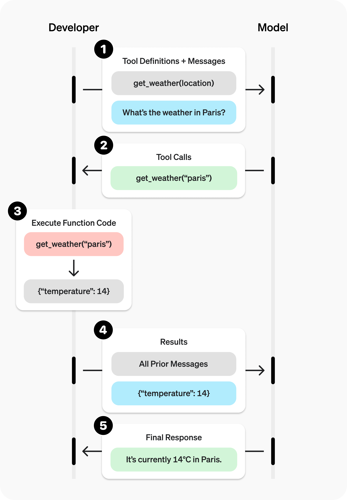
Function Calling，src: https://developers.openai.com/api/docs/guides/function-calling模型上下文協定（Model Context Protocol, MCP）
Anthropic 在 2024 年 11 月開源的 MCP，把每接一個工具就寫一次整合變成一個標準協定。它在 2026 年已經不只是 tool-use 協定了，比較像通用的 context 供給標準。最大的一次改寫是 2026-07-28 那版規格：把協定核心改成無狀態，於是不再需要黏性路由或共享 session store，可以像一般網服一樣水平擴展。
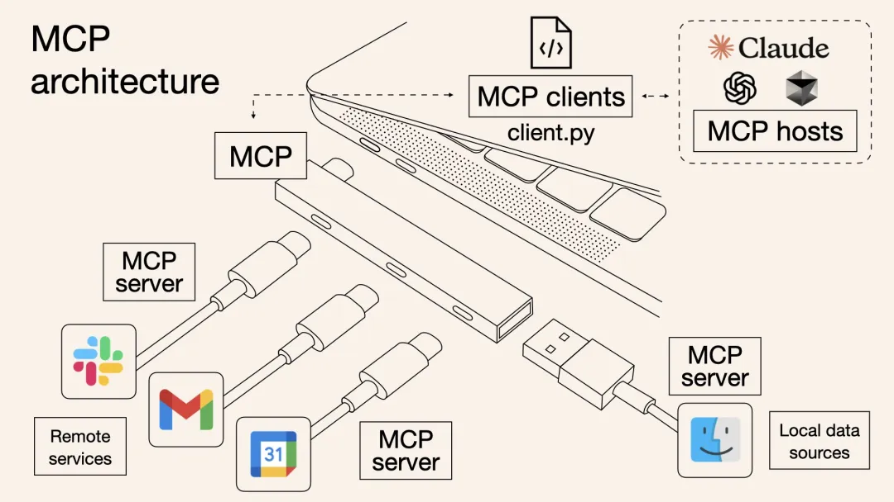
MCP，src: https://mcpcn.com/fr/blog/understanding-mcp-protocol/順帶一提 A2A（Google, 2025）。它在 2025 年 4 月發布，同年 6 月連規格跟 SDK 一起捐給 Linux Foundation，2026 年 3 月釋出 v1.0，到 2026 年 4 月滿一週年時，支援組織從五十多個長到一百五十多個。
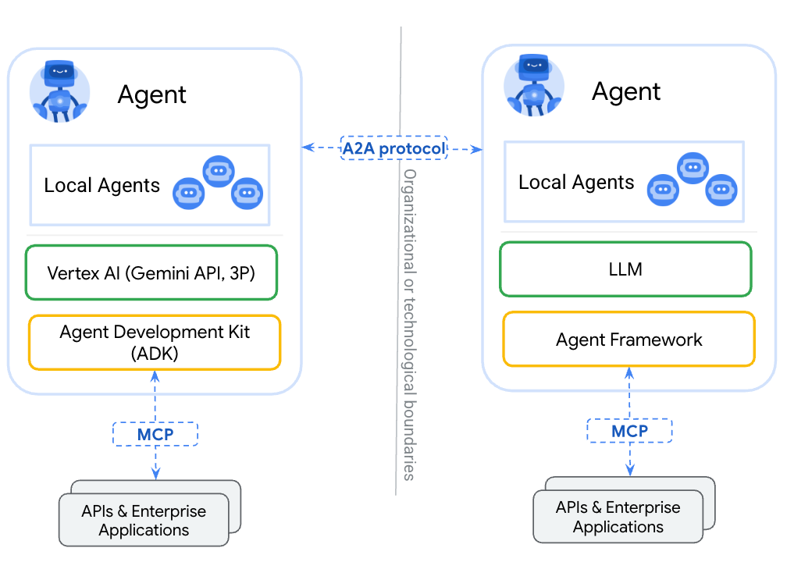
A2A，src: https://a2a-protocol.org/latest/topics/what-is-a2a/#a2a-and-mcp這裡有個區分我覺得要講清楚，MCP 是 agent 對工具，工具是被動的能力提供者；而 A2A 是 agent 對 agent，對方有自己的推理跟自主性。兩層並存是目前的參考架構。
Agent Skill
Anthropic 在 2025 年 12 月 18 日把 Agent Skills 開成公開標準，規格本身很小：一個資料夾，加一份帶 YAML frontmatter 的 SKILL.md。
核心設計是三層漸進揭露，啟動的時候只載入每個 skill 的名稱跟描述，大概幾十個 token，而當任務對上某個描述，才把完整指令讀進來，真的需要的時候，才去載入附帶的程式跟檔案。
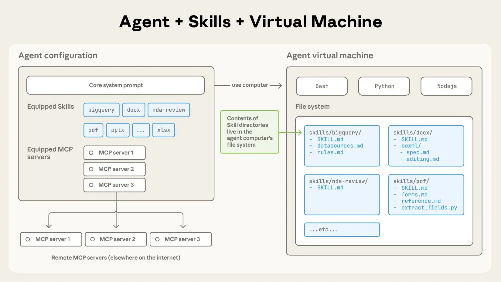
Agent Skills，src: https://www.anthropic.com/engineering/equipping-agents-for-the-real-world-with-agent-skills假設一個 skill 的名稱加描述約 30 個 token、完整的 SKILL.md 約 2000 個 token。掛 100 個 skill，全部載入是 20 萬 token，直接爆掉任何一個 context window；漸進揭露之下常駐成本只有 100 × 30 = 3000 token，只有真正被叫到的那一兩個才付 2000 的代價。
擴散速度也很誇張，開標準後兩天內 Microsoft 就把它接進 VS Code、OpenAI 接進 ChatGPT 跟 Codex CLI，到十二週後的 2026 年 3 月，agentskills.io 上已經列了三十多個相容實作，今天這個數字是四十幾個，包括 JetBrains、Cursor、Gemini CLI、Goose、Snowflake、Databricks、Mistral 跟 Spring AI。
記憶（Memory）
前面說過 context 是臨時的，視窗關掉就沒了，模型的權重不會因為這次對話而改變。但很多事情需要跨越那個邊界。現階段的做法是用工程手段補上模型本身沒有的那一塊，這就是記憶。
實務上大致分三種，而且是混用，不是擇一。
- 工作記憶：就是當下 context 裡的那些東西，任務結束就丟。
- 事實記憶：存的是穩定的結論，使用者偏好、專案設定、已經查證過的資訊，通常寫成檔案或存進向量庫，需要的時候再檢索回來，RAG 就是這樣實踐的。
- 經驗記憶：存的是「上次這樣做失敗了」，後面會提到的 Reflexion 的反省紀錄跟 Voyager 的技能庫都屬於這一類。它影響的不是模型知道什麼，是模型下次怎麼做。
三個實務上真的會踩到的問題。
- 寫入的判準：什麼值得記？全部都記等於沒記，檢索的時候雜訊會蓋過訊號。
- 失效：記憶系統真正難的不是存，是知道什麼時候該忘。
- 檢索：記憶只有被撈出來、放進 context，才會真的發生作用。
要看清楚的是，這一整套都是外掛。模型的權重從頭到尾沒有變過，我們只是每一輪重新把該記得的東西塞回它眼前。這是一個很有效的替代方案，但它不是真的學習，這就是第五部要談的第二道牆。
工程（Engineering）
模型不會完全照你想的做，這件事到今天都沒有被真正解決，只是被推到愈來愈外層去處理。為了讓上述這些零件能夠統一且標準化、自動化、流程化，於是大家就開始將工程的概念導入進來，為模型的運作提供一個實踐的平台與框架。
過去幾年，控制模型行為的方法一路往外長。這五個詞常被混用，但它們其實是五個不同的控制單位，而且是堆疊上去的：
- prompt engineering 控制一次回應。這個講法在 GPT-3 之後開始流通，學術上的形式化是 Prompt Programming for Large Language Models（Reynolds 與 McDonell, 2021）。
- context engineering 控制模型看得到什麼。2025 年 6 月 18 日，Shopify 的 Tobi Lütke 在推特上寫下那個被引用最多的定義，Karpathy 一週後背書，這個詞才真正流行起來（Simon Willison 有完整記錄），Anthropic 同年 9 月把它寫成方法論。
- harness engineering 控制模型能碰到什麼。由 Viv Trivedy 在〈Anatomy of an Agent Harness〉裡提出，Addy Osmani 2026 年 4 月那篇明確把命名歸功給他。
- loop engineering 控制單一 agent 的行為週期。出自 Addy Osmani 2026 年 6 月 7 日的〈Loop Engineering〉，核心主張是把自己從「那個下 prompt 的人」的位置上換掉，改成設計一套會自己下 prompt 的系統。
- graph engineering 控制多個 agent 怎麼組織。最晚成形的一個，出自 LangChain 2026 年 7 月 22 日的回顧，而且那篇自己就說得很坦白：這不是新想法，只是一套老做法的最新名字。
值得注意這串詞的時間分布：prompt 是 2020 年、context 是 2025 年年中，剩下三個全部擠在 2026 年的四月到七月。這代表的不是「終於有人想通了」，而是這套分層本身還在成形，名字比做法晚了很久才追上來。看到這些詞的時候，值得記得它們多新。
方向倒是一致的：愈往外層，你放棄直接指揮模型的程度就愈高，改成去設計它所在的環境。
Prompt Engineering
最裡面的一層，也是最多人有直覺的一層：同樣一個問題，換個問法，答案的品質可以差很多。Reynolds 與 McDonell（2021）把這件事講成一個原則：prompt 應該當成程式來寫，而不是當成咒語來試。
從 few-shot 到 Chain-of-Thought（Wei 等人，Google, 2022）。CoT 的歷史意義在於它第一次證明「怎麼問」可以改變能力邊界，這在當時是很反直覺的。
它的重要性其實在下降，原因很簡單，agent 會跑幾十輪，你根本控制不了第 15 輪的 prompt 長什麼樣子。
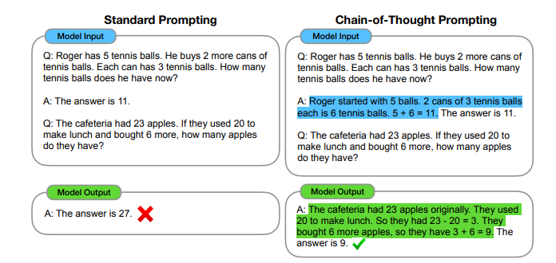
CoT，src: https://arxiv.org/abs/2201.11903Context Engineering
當 agent 開始跑很多輪，你能控制的就不再是「這一句怎麼寫」，而是「這一輪它眼前到底有什麼」。Tobi Lütke（2025） 給的定義是：把任務所需要的全部脈絡準備好，讓模型有機會真的解得出來。
這裡跟 prompt engineering 的差別值得先釐清楚。prompt engineering 優化的是單一、離散的一次互動：怎麼把這一次要送進去的指令寫得更清楚、範例選得更好。context engineering 管的是更大的範圍：模型在整個任務過程中、每一次推論能看到的全部 token，system prompt、工具定義、歷史對話、檢索結果、上一輪工具回傳的結果，全都算進來。Anthropic 自己的說法是：prompt engineering 問的是「怎麼寫這次指令」，context engineering 問的是「這一步最可能讓模型做出我們想要行為的那組 context 配置是什麼」。
換句話說，prompt engineering 是寫好一封信，context engineering 是管理整個對話的短期記憶。前者是一次性的、靜態的；後者是持續的、動態的。隨著 agent 跑下去，context 會不斷累積、腐壞（也就是前面提過的 context rot），需要一直主動管理，而不是一次寫好就結束。
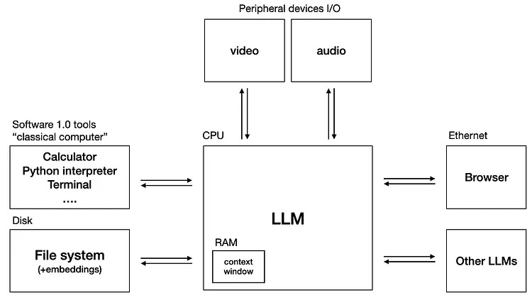
既然 context 有限又會腐壞，就得主動管理它。常見手法有壓縮、把用完的工具結果清掉、外部記憶、檢索（RAG，Lewis 等人 2020 年在 Facebook AI Research 提出）這幾類。
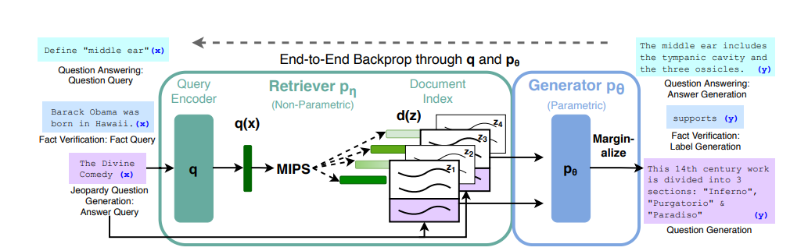
RAG，src: https://arxiv.org/abs/2005.11401更多可以參考 Anthropic 的 Effective Context Engineering 講心法、Manus 那篇講一線經驗。
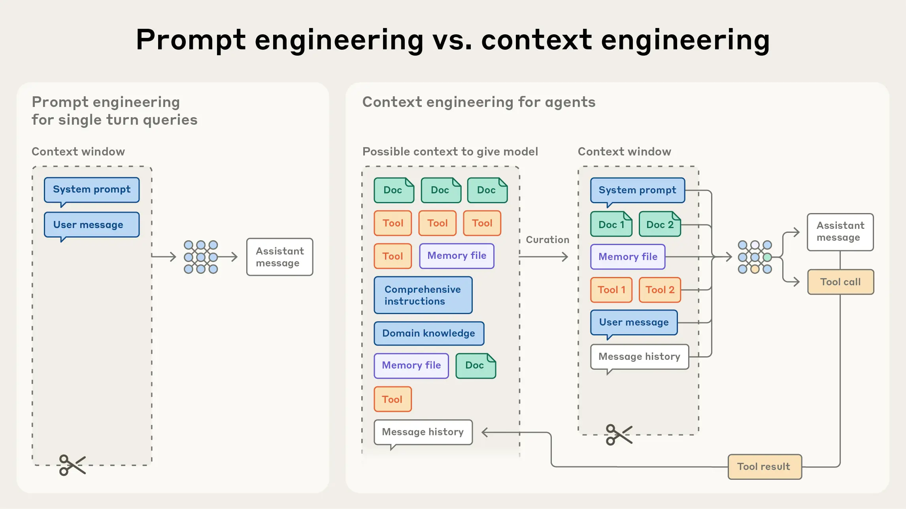
prompt engineering vs. context engineering，src: https://www.anthropic.com/engineering/effective-context-engineering-for-ai-agentsHarness Engineering
前兩層處理的都還是「模型看得到什麼」。再往外一層，問題換成它能對世界做什麼。這個名字出自 Viv Trivedy 的〈Anatomy of an Agent Harness〉，Addy Osmani（2026）把它整理成一套可以照著做的東西。
harness 就是把模型接上一個可以執行的環境。模型本身只會產生 token，是 harness 讓它能真的動手。
它至少包含四件事：
- 動作空間：模型能做的事，被限定在你給的那組工具裡，沒給的就做不到。這同時是能力的上限，也是安全的邊界。
- 執行環境：程式在哪裡跑、能碰到哪些檔案、能不能連外網。這一層實務上幾乎都要沙箱化，因為 agent 一定會做出你沒預期的事，你需要的是那件事的後果可以回復。
- 回饋的品質：工具失敗的時候回傳什麼，比一般人以為的重要得多。一句「Error」跟一段「檔案不存在，這個目錄下有這幾個相近的檔名」，對模型下一步的影響天差地遠。harness 做得好不好，有一半看錯誤訊息寫得好不好。
- 狀態的存放：哪些東西留在 context 裡、哪些寫到檔案或資料庫、下一輪再撈回來。
值得強調的是，agent 的表現有很大一部分不是模型貢獻的，是這一層貢獻的。同一個模型接上不同的 harness，能力差距可以大到不像同一個模型。Lilian Weng 在 Harness Engineering for Self-Improvement（2026）裡綜合了約 35 篇論文，結論也是這樣：把「模型能力」跟「系統能力」切開之後會發現，設計好一個 harness 帶來的提升，可以不輸換一個更強的基礎模型。
Loop Engineering
工具有了、環境有了，下一個問題是誰來按下一步。Addy Osmani（2026）給的答案很直接：把自己從「那個下 prompt 的人」的位置上換掉，改成去設計一套會自己下 prompt 的系統。
從一次生成，變成「行動、觀察、推理、再來一次」的循環。但真正要設計的不是循環本身，而是什麼時候該停，以及做錯了怎麼回頭。
停止條件至少要有四種，而且缺一不可：任務完成（而且要能被判定，不是模型自己說完成了就算）、確定失敗、超出預算（token 或金錢）、超過步數上限。少了後面兩個，一個卡住的 agent 可以整夜燒錢。
復原則要先能驗證，而驗證的成本差很多。跑測試、對照 schema、檢查回傳碼，這些便宜又客觀；「這個行程排得好不好」就只能找另一個模型來評，貴而且不一定準。一個任務適不適合交給 agent，很大程度取決於它的驗證便不便宜。這也是為什麼寫程式是目前 agent 做得最好的領域，因為編譯器跟測試會直接告訴它對不對。
驗證失敗之後的處理也有層次：原地重試、換個做法重試、退回上一步、整份計畫重新規劃、交還給人。多數失控的 agent 都只實作了第一種。具體的模式在後面 Agent 那節講。
Graph Engineering
最外面一層，也是五個裡面最新的一個。名字出自 LangChain（2026）的三年回顧，而那篇自己就強調這不是新發明，只是同一套做法終於有了名字。看這一層的時候值得把這件事放在心上：它還沒定型，業界對「該不該做 multi-agent」到現在都還沒有共識。
把多個 agent 迴圈接成一張圖。節點是專職 agent，邊是工作交接，再加上平行分支、驗證者、共享狀態、停止條件。
代理人（Agent）
零件到這裡都齊了：看得到（context）、碰得到外面（tool）、記得住（memory）、指揮得動也跑得起來（engineering）。
剩下的問題有兩個：怎麼把這些東西組成一個會自己往前走的迴圈，以及當它真的開始往前走，它會怎麼壞。
ReAct
ReAct（姚順雨等人，普林斯頓 + Google, 2022）的 Thought / Action / Observation 到今天仍然是所有 agent 的骨架。它是邊做邊決定下一步。查到那天的直飛班機全滿了，它當場就能轉向去找轉機或者提議改日期，而不是把原本的步驟硬跑完。
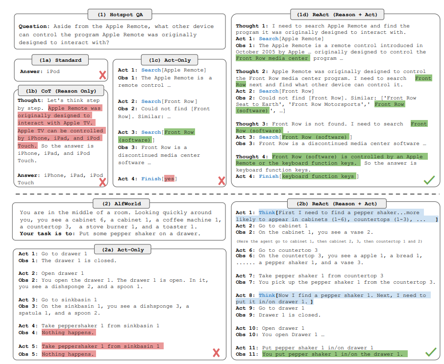
ReAct，src: https://arxiv.org/abs/2210.03629Plan and Execute
先讓 planner 產出一份多步計畫，再由 executor 一步一步執行，中途發現不對可以重新規劃。這個模式源自 Plan-and-Solve（Wang 等人, 2023）跟 BabyAGI（Nakajima, 2023），LangGraph 有現成教學可以直接跑。
好處是規劃跟執行分離之後，你可以用強模型規劃、弱模型執行，成本結構完全不一樣。
用行程那個任務對比：ReAct 是走一步看一步，適應力強但貴，Plan-and-Execute 先列好「查航班、查旅館、排景點、下訂」再逐項執行，比較省錢，但中途出錯要靠重新規劃來救。
ReAct 貴在哪裡值得講清楚。它的每一輪都得把先前所有的 thought、action、observation 一起再送回模型，推理才會連貫，所以第十輪送進去的 token 是第一輪的十倍左右。整趟跑下來的總量是 1 加 2 一路加到 n，成長速度是步數的平方，不是步數本身。步數翻倍，帳單大約變四倍。
Plan-and-Execute 之所以省，是因為它把這個累積切斷了：planner 只跑一次，每個 executor 只拿到自己那一步需要的 context，彼此不累加，總量只跟步數成正比。
歷史上的幾個對照組也值得看：Reflexion（Shinn 等人, 2023）做自我反省，Generative Agents（Park 等人，史丹佛, 2023）就是那個史丹佛小鎮，它的 memory stream 影響了後面幾乎所有記憶架構，Voyager（Wang 等人，NVIDIA, 2023）則是技能庫的雛形。
更多內容可以參考 Lilian Weng 2023 年那篇 LLM Powered Autonomous Agents。
Agent 的五種典型故障
一、誤差複利：假設每一步的正確率是 $p$，而且步與步之間獨立，那麼 $n$ 步全對的機率就是：
每一步 95% 聽起來很高，二十步之後只剩 $0.95^{20} \approx 36\%$。反過來解更嚇人：如果你要求一個五十步的任務有九成成功率，每一步需要的正確率得是 $0.9^{1/50} \approx 0.998$，也就是每一步都得做到 99.8%。這解釋了為什麼長程任務這麼難，它不是模型不夠聰明的問題，是指數的本質。
但同一條式子也指出了出路。$p^n$ 之所以崩得這麼快，前提是「錯了就錯了」。如果每一步都能驗證、失敗可以重試 $k$ 次，單步的有效正確率就變成 $1-(1-p)^{k}$，整體變成：
同樣是 $p=0.95$、$n=20$，只要每步能重試一次，成功率就從 36% 拉到 $(1-0.05^2)^{20} \approx 95\%$。這就是為什麼後面講的對策全部圍繞在驗證跟重試，而不是換一個更聰明的模型。能不能驗證，比單步準確率重要得多。
二、卡在迴圈裡：驗證失敗之後模型不換策略，只是換個講法再試一次。API 呼叫穩定增加、token 持續在燒，但任務進度是零。
三、context 塞爆：工具結果全部留在上下文裡，跑到一半就滿了，然後模型開始忘記最早的指令。而且不只是塞不下，上下文愈長每一輪也愈慢、愈貴，成本會同時找上來。
四、用幻覺補洞，這是最危險的一種：工具回傳錯誤沒有被處理，模型自己編一個看起來合理的答案填上去。查不到某個景點的公休日，它就直接寫「週一正常營業」然後排進去。輸出看起來完全正常，你不去查根本不會發現。
五、假設分歧（多 agent）：兩個 agent 對同一件事抱著不同假設，然後各自往下推。
這五種的對策都不是更好的 prompt，而是停止條件、預算上限、驗證步驟，還有評估。Hamel Husain 那篇 Your AI Product Needs Evals 講得很直白：unsuccessful products almost always share a common root cause: a failure to create robust evaluation systems.
Agent 的品質其實不太取決於模型多強，取決於工程有沒有被設計好。
這個年代，AI 是能代你行動的分身
往前看未來會是怎樣
先想一個畫面。
某個平日早上，你交代一句就出門：這週的事情你排一下。載你的車沒有駕駛座，路上其他車也一樣。你在車上收到的不是一份行程建議，是一份已經訂好、付過款、跟家人的行事曆對過的行程。你去看診，醫生調出來的影像判讀是模型做的，而那份病歷從頭到尾沒有離開這個國家的機房。傍晚你回到家，倉庫裡的機械手臂還在動，它今天第一次碰到一種沒見過的箱型，自己試了幾次就處理掉了，沒有人幫它改程式。而幫你排行程的那個 agent，記得你上一次為什麼取消了那趟旅行。
這些畫面裡，有的已經在營運，有的還在實驗室，有的目前還做不到，但都在以過去無法想像的速度不斷進步。
數據與算力
先從最硬的兩個約束開始：數據跟算力。
Epoch AI（Villalobos 等人, 2022）推估，網路上高品質的人類文本大約會在 2026 到 2032 年間被用完。這跟前幾年的處境剛好反過來。那時候的約束是算力，大家煩惱的是手上的資料餵不完，而現在算力還在長，可餵的東西先快沒了。
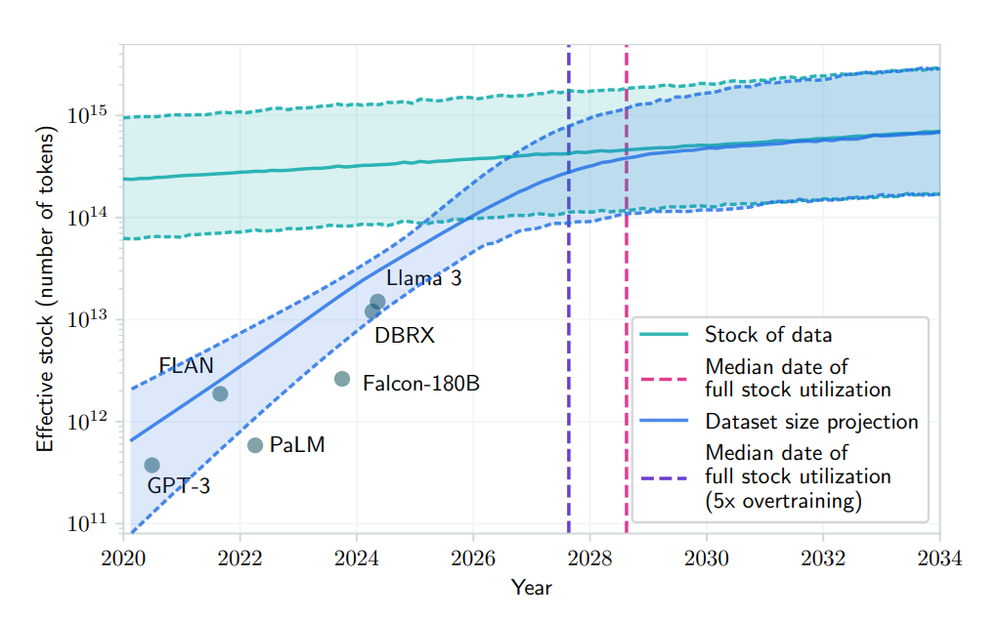
src: https://arxiv.org/abs/2211.04325出路目前有三條，都還沒有定論。合成資料最直接，但用模型生出來的資料去訓練模型，很容易把既有的偏誤放大成一個迴圈。自我對弈在規則明確的領域已經證明可行，AlphaGo Zero 就是靠它把人類棋譜整個拿掉，問題是大部分真實任務沒有那麼乾淨的勝負判定。第三條是從環境互動裡學，讓 agent 自己去試、自己拿回饋。
算力這一項則是瓶頸換了位置。前幾年缺的是晶片，現在缺的是電力、土地，以及電網併聯的時程。一座大型資料中心真正在等的常常不是機櫃，是變壓器的交期跟併聯許可，而這兩樣東西不是多付錢就能加速的。算力不再只是採購問題，而是基礎建設問題，這也是下一節那件事會發生的原因之一。
而走進機房裡面，同一個約束又換了一種形式出現：銅。
單櫃功率這幾年的成長很誇張。GB200 NVL72 這一級是一百多 kW，規劃中的下一代是六百 kW 等級，是一般傳統機櫃的幾十倍。功率等於電壓乘電流，電壓不動的話，功率翻幾十倍就是電流翻幾十倍，而導體要多粗完全由電流決定。到某個點，銅排的重量、成本跟佔的體積會比晶片先撞牆。
解法是把電壓拉高。2025 年之後業界開始往 800V 直流配電走，同樣的功率，電壓拉高一個級距電流就掉一個級距，銅可以少掉將近一半。順帶也砍掉幾層轉換：傳統路徑是中壓交流降到 415V 交流、進機櫃整流成直流、再降到 54V，每一層都吃掉幾個百分點；800V 直流則是用固態變壓器直接從中壓交流轉成直流送進機櫃。這套東西的技術來源其實是電動車，800V 平台的碳化礟元件跟電路拓樸幾乎可以直接搬過來。
資料在機房裡移動撞到的是同一堵牆。電訊號在銅線上的可靠距離會隨速率下降，到每通道 200Gb/s 這一級，被動銅纜大概只剩一公尺上下，剛好夠一個機櫃內部，跨機櫃就非走光不可。傳統做法是把光模組插在交換器面板上，電訊號要先在電路板上跑一段、經過重定時晶片才進光模組，而這一段本身很耗電。一座十萬顆 GPU 等級的叢集，光模組加起來就是好幾 MW，等於有一整塊電費是花在把訊號從晶片搬到面板上。
共同封裝光學（co-packaged optics）做的是把光引擎搬進交換晶片的封裝裡，電訊號只走幾公分就轉成光。NVIDIA 在 2025 年發表的 Quantum-X 與 Spectrum-X Photonics 是第一批走向量產的產品，官方數字是光互連這一層的能耗效率約 3.5 倍，而且雷射數量大幅減少，故障率跟著降下來；Broadcom 的 Tomahawk 系列走的是同一條路。
這兩件事的形狀其實一樣。搬電跟搬資料過去都靠銅，而銅在這個尺度上同時撞到物理上限，於是一邊把電壓拉高、一邊把訊號換成光。這一層永遠不會出現在模型的發表上，但它卻是未來 AI 發展的重要關鍵。
主權 AI（Sovereign AI）
當算力變成基礎建設，它就會變成國家的事。
2025 到 2026 年間，歐盟、波斯灣國家、印度，以及一整排受監管的產業，開始要求 AI 系統的三樣東西都留在一個明確的邊界裡面：資料、模型權重，以及跑它們的算力。法規是這件事的硬約束，GDPR、中國的 PIPL、印度的 DPDP、日本的 APPI，每一部都對跨境傳輸設了實質限制。
具體的樣子是各國都開始養自己的基礎模型：法國的 Mistral、阿聯的 G42 Falcon、沙烏地的 HUMAIN、新加坡的 SEA-LION、印度的 BharatGen、日本的 LLM-jp。錢也跟上來了，2026 年全球主權 AI 投資預估超過一千億美元，而 2022 年這個數字幾乎是零。日本承諾到 2030 年投入十兆日圓；印度從五百多個提案裡選出十二個本土基礎模型，配套的國家算力目前約三萬四千張 GPU，目標是 2026 年底達到十萬張。雲端業者也在配合切割，AWS 的歐洲主權雲 2026 年 1 月啟用，是一家在德國註冊、人員與營運都獨立於其他區域的實體。
值得講清楚的是，這條路要的從來不是最強的模型。這些國家級模型幾乎都落後前沿一到兩代，短期內也追不上。它們要解的是另外兩個問題。
一個是本土化。前沿模型的訓練語料絕大多數是英文，而模型對一個地方的法規、判例、醫療給付規則、公文格式，甚至方言跟慣用語的掌握，跟這些東西在網路語料裡的佔比直接相關。這不是靠翻譯補得回來的，因為缺的不是語言，是那個社會實際怎麼運作的細節。新加坡的 SEA-LION 針對東南亞多語、印度的 BharatGen 針對那二十幾種官方語言，做的都是同一件事：把自己的語料變成訓練資料，而不是等別人順便訓練到。
另一個是安全。當醫療紀錄、稅務資料、國防相關的文件要進模型，「這些 token 會流到哪一國的機房」就變成一個必須有答案的問題，而不是採購條款裡的一行字。法規把這件事寫死了，模型權重跟推論算力也就只能跟著留在境內。再往下一層是韌性：一個把行政、醫療、教育都接上外部 API 的國家，等於把這些服務的可用性交給一家外國公司的商業決策，漲價、改條款、因地緣政治中斷服務，每一種都不是假想。
所以主權 AI 的合理判準不是「有沒有做出很強的模型」，而是「在自己的語言跟自己的法規底下，這套系統能不能被信任，以及出事的時候能不能自己關掉、自己修好」。
世界模型（World Model）
語言模型學的是文字的統計規律，不是世界怎麼運作。它知道「杯子掉下去會破」這句話很常出現，但它沒有一個可以拿來推演的物理世界。
Meta 的 V-JEPA 2（Assran 等人, 2025）走的是另一條路：不去還原像素，改成在表徵空間裡預測下一刻會變成什麼樣子。好處是它可以忽略畫面裡那些本來就無法預測的雜訊，像是樹葉怎麼晃、光影怎麼跳，把容量留給真正有規律的部分，訓練效率因此高很多。它用超過一百萬小時的網路影片預訓練，之後能在沒看過的機械手臂上零樣本做出伸手、抓取、取放這些動作，沒有額外的獎勵訊號，也沒有再收資料。
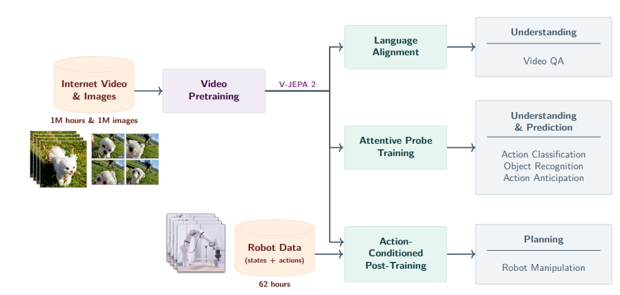
V-JEPA 2，src: https://arxiv.org/abs/2506.09985從螢幕走到現實：自駕與具身智慧
前面講的所有東西都發生在螢幕裡。同一套邏輯往實體世界推，就是自駕跟機器人，而實體世界會多收兩筆費用：錯了不能重來，而且資料沒辦法從網路上抓。
自駕是目前最成熟的一塊。Waymo 在 2026 年把服務範圍擴到十一個城市、超過一千四百平方英里，每週約五十萬趟付費行程；2025 年全年一千五百萬趟，累計超過兩千萬趟，並計畫在 2026 年進入二十多個城市，包括東京與倫。
人形機器人的熱度更高，但證據薄很多。2026 年常被稱作具身智慧的量產元年，不過目前拿得出來的成果，絕大多數集中在工業與物流這類場景明確、動作重複的窄任務上，還未進入我們的日常生活當中。
AGI 時間表：從 2027 到十年後
技術跟基礎設施都講完了，剩下最常被問、也最沒有答案的一題：還要多久？
但在問還要多久之前，得先問一件事：所謂的 AGI，到底是什麼？
這個詞到今天沒有公認的定義，而且流通的幾種定義彼此差很多。
OpenAI 章程裡的版本是經濟性的：highly autonomous systems that outperform humans at most economically valuable work，高度自主、且在大多數具經濟價值的工作上超越人類的系統。這個定義把門檻綁在部署上，而不是綁在能力上，所以它天生就慢，因為要等的不只是模型，還有法規、保險、工會跟整套流程重寫。
DeepMind 的 Levels of AGI（Morris 等人, 2023）則主張根本不該把它當成一道門檻。它把能力拆成「表現水準」跟「通用程度」兩個軸，從 Level 1 的雛形一路分到 Level 5 的超人類，並且要求把自主性當成另一個獨立的維度來看，而不是能力到了就自動給它。按這個框架，問「AGI 哪一年到」本身就是問錯問題。
Anthropic 的 Amodei 乾脆避開這個詞，他說自己不喜歡 AGI 這個講法，改用 powerful AI，或者 a country of geniuses in a datacenter 來描述他要講的那件事。
Anthropic 的 Dario Amodei 在 2026 年達沃斯的說法是，a country of geniuses in a datacenter 大概 2027 年就會出現，理由是編碼自動化加上 AI 研究本身的回饋迴圈，模型開始能加速自己的開發。同一場合，Google DeepMind 的 Demis Hassabis 給的數字是五到十年。
下一個會是甚麼？
AI 是下一場工業革命，而且它不是即將發生，是正在發生。
說它是工業革命也不為過。蒸汽機跟電力改變的是動力的價格，把「出力」從人跟動物身上移到機器上。這一次改變的是認知工作的價格，把「讀、歸納、產出」從人腦移到算力上。
繁瑣的事可以被 AI 完成之後，人可以放開手腳去做更有意義的事。
繁瑣的事情被自動化，人類可以更加放開手腳去做更有意義的事，而不是將時間與精力浪費在這些事情上。而「更有意義的事」不是一句安慰，它有具體內容：七十年交出去的每一項都是「怎麼做」，而留在人手上的三件事，問對問題、驗證結果、承擔後果，一件都沒有交出去，也看不出來要怎麼交。剩下來的那三件，就是有意義的那部分。只是它不會自動發生。省下來的時間可以拿去做這三件，也可以拿去做更多同樣繁瑣的事，這是選擇問題，不是技術問題。
那該怎麼面對未來？
答案就在剛剛那三件事裡。它們不只是「還沒被交出去」，而是現在你手上只剩這三件，所以值得分開來講怎麼練。
- 問對問題：模型只會回答，它不會問，也不會告訴你這個問題到底值不值得問。而當執行成本掉到接近零，瓶頸就整個移到問題本身：以前想到一個好問題要花三個月驗證，現在三小時就有答案，於是你一年問了幾個對的問題，幾乎直接決定你產出多少。問題不會從模型裡長出來，只會從現場長出來，所以要讓自己一直待在會撞到真問題的地方，接觸真的使用者、真的資料、真的失敗。
- 驗證結果：一個任務適不適合交給 AI，取決於驗證便不便宜。反過來看就是，愈能把「什麼叫做對」定義清楚的人，愈指揮得動 AI，而寫不出驗收標準的人，會覺得 AI 做出來的東西永遠差一點，卻講不出差在哪裡。這也是為什麼寫程式是目前 agent 做得最好的領域，因為編譯器跟測試會直接告訴它對不對。
- 承擔後果：這一項跟前兩項不太一樣，它不是還沒交出去，是交不出去。責任要交給誰，那個誰得有東西可以賠：名聲、執照、飯磗。模型一樣都沒有，所以不管中間有多少步是它做的，署名的還是你。這逗出一個以前不存在的處境，你要對一個不是自己親手做的東西負全責，於是上一項就不只是效率問題了，每一份沒驗過就送出去的產出，賭的是你自己的名字。組織裡的版本更難看：當每個人的產出都有一部分是生成的，第四部那個「用幻覺補洞」的下一步就是沒有人記得那一段是誰寫的。七十年交出去的都是方法，沒有一次交出去的是責任。
這三件事都跟工具無關，而不是學工具。工具的半衰期大概一年甚至更短，但七十年來那條交接的線沒有變過，看懂的人下一個工具出來不用重學。
我們花了七十年一層層把控制權交出去，下一個會是什麼？
參考來源
思想與歷史
-
The Bitter Lesson
一頁的短文。論點是靠算力的通用方法最後總會贏過靠人類知識堆出來的巧妙設計，而每一代研究者都要重學一次。整篇文章的思想錨點。
-
Deep Neural Nets: 33 years ago and 33 years from now
把 LeCun 1989 年的論文用現代工具重跑一次，然後逐項拆解 33 年的進步分別來自資料、算力還是演算法。做歷史敘事時很好的量化素材。
架構與底層
-
Neural Machine Translation by Jointly Learning to Align and Translate
Attention 真正的起點。當時是為了解決 RNN 把整個句子壓進一個固定長度向量的瓶頸，比 Transformer 早三年。多數歷史整理會跳過這篇。
-
Attention Is All You Need
Transformer 原始論文。它的核心動作是減法：把遞迴拿掉只留 attention，換來可平行化，這才是後來所有 scaling 的前提。
-
The Illustrated Transformer
用圖解一步步拆 Transformer 的資料流。到現在仍然是最好的視覺化入門。
-
3Blue1Brown 神經網路系列
用幾何直覺講神經網路與 attention，「attention 在向量空間裡到底做了什麼」講得比多數論文清楚。
-
OpenAI Tokenizer
互動工具。貼中英文對照就能看到 token 數的差異，用來解釋為什麼中文 API 比較貴、context window 比較不夠用。
-
RoPE: Rotary Position Embedding
現在幾乎所有開源模型的位置編碼方案，也是長上下文外推能力的基礎。
-
FlashAttention
沒有改動任何數學，只重排了記憶體存取順序，就把 attention 算得快好幾倍。硬體與演算法共同設計的最佳範例。
-
Switch Transformer
MoE 稀疏化的代表作。2025 到 2026 年的前沿模型幾乎清一色都是 MoE 架構。
-
Efficient Memory Management for LLM Serving with PagedAttention
把 KV cache 當成作業系統的分頁問題處理。推論這一層寫的人最少，但實際部署時最痛。
-
Scaling Laws for Neural Language Models
第一次把模型大小、資料量、算力與效能的關係寫成可外推的冪次律。
-
BERT
預訓練 + 微調範式的代表作。自監督讓標註不再是瓶頸，整個網際網路變成訓練資料。跟 GPT 的 decoder-only 路線對照著讀最有意思。
-
Language Models are Few-Shot Learners
in-context learning 的出處。規模大到一個程度之後不需要微調，把範例寫在 prompt 裡就行。沒有這篇就沒有後面所有的 prompt 工程與 agent。
-
Vision Transformer
把圖片切成 patch 當 token，影像與文字首次共用同一個架構。
-
CLIP
用四億組圖文配對做對比學習，把圖與文字對齊到同一個向量空間。所有多模態模型的地基，也是 agent 能看螢幕的前提。
-
Denoising Diffusion Probabilistic Models
先加雜訊再學會倒著走。訓練穩定，幾年內取代了 GAN，今天的影像生成幾乎都是這條線。
-
Generative Adversarial Networks
生成模型這條線的起點。兩個網路對抗，思路漂亮，但訓練不穩定是它的死穴。
-
LLaMA
模型本身不是前沿，但權重外流之後引爆的開源生態，是今天本地部署、微調與小模型路線的起點。
訓練與對齊
-
Training language models to follow instructions with human feedback
RLHF 的定義性論文，也是 ChatGPT 真正的技術來源。base model 不會聽話，聽話是後天訓練出來的。
-
Direct Preference Optimization
證明不跑 RL 也能達成類似 RLHF 的效果，把對齊的工程門檻降了一大截。
-
DeepSeek-R1
RLVR（用可驗證的獎勵做強化學習）第一次被完整公開。它證明長程多步驟的決策能力可以被訓練出來，是 Agent 從 prompt 技巧變成能力問題的分界點。
-
Chain-of-Thought Prompting
第一次證明「怎麼問」可以改變模型的能力邊界。
-
Why We Think
test-time compute 與思考鏈這條線最完整的系統整理。
Agent 基礎
-
ReAct: Synergizing Reasoning and Acting
Thought / Action / Observation 迴圈的起點，到今天仍是所有 agent 的骨架。
-
Reflexion
讓 agent 把失敗經驗轉成語言化的反省，存下來影響後續嘗試。
-
Generative Agents: Interactive Simulacra of Human Behavior
就是那個史丹佛小鎮。memory stream 加上 reflection 與 planning 的設計，影響了後面幾乎所有記憶架構。
-
Voyager
在 Minecraft 裡持續累積可重用技能的 agent，技能庫概念的雛形。
-
LLM Powered Autonomous Agents
整個領域共同語彙的來源，planning / memory / tool use 的三分法就是從這裡流行起來的。
-
Retrieval-Augmented Generation
把外部知識接進生成流程的起點，也是後來所有 agent 記憶架構的源頭。
-
Plan-and-Execute 教學
可直接跑的實作。planner 產出多步計畫、executor 逐步執行，好處是可以用強模型規劃、弱模型執行。源自 Plan-and-Solve 與 BabyAGI。
Agent 工程
-
Effective Context Engineering for AI Agents
把 context 當成有限資源來管理。引用並解釋了 context rot：token 一多，模型從中準確取用資訊的能力反而下降。（這個說法不是 Anthropic 提出的，是 Chroma Research 在 2025 年 7 月的技術報告裡系統測試了十八個前沿模型之後站穩的。）工程目標是找出最小的高訊號 token 集合。
-
Context Engineering for AI Agents: Lessons from Building Manus
一線經驗，具體到可以直接抄。包含 KV-cache 命中率的優化、刻意把錯誤留在上下文裡讓模型看到自己失敗過、用檔案系統當外部記憶。
-
How We Built Our Multi-Agent Research System
orchestrator 加上隔離 subagent 的模式說明，每個 subagent 在自己的乾淨上下文裡跑完再回傳摘要。
-
Don't Build Multi-Agents
和上一篇結論相反。主張上下文一分裂 agent 之間就會抱著不同假設往下做。兩篇並讀比各自單看有價值。
-
3 Years of Graph Engineering with LangGraph
少數講實作細節而不是賣框架的回顧。
-
Your AI Product Needs Evals
沒有 eval 的 agent 等於沒有測試的程式。反行銷話術，講的都是實務上真的會遇到的事。
協定與標準
-
Model Context Protocol
把「每接一個工具就寫一次整合」變成標準協定。2026 年已經從單純的 tool-use 協定演化成通用的 context 供給標準。
-
Agent Skills
Anthropic 於 2025-12-18 開為公開標準。一個資料夾加一份帶 YAML frontmatter 的 SKILL.md，核心是三層漸進揭露：啟動只載入名稱與描述，任務匹配才讀完整指令，需要時才載入附帶檔案。兩天內 Microsoft 跟 OpenAI 就跟進，十二週內三十多個產品出了相容實作，目前四十幾個。
前沿整理
-
The Landscape of Agentic Reinforcement Learning for LLMs: A Survey
把 LLM 從「單步 MDP 的序列生成器」重新定位成「時間延展 POMDP 中的自主決策體」，並圍繞 planning、tool use、memory、reasoning、self-improvement、perception 建立分類法。真實難題是多輪 credit assignment 與 rollout 的可擴展性。
-
Memory in the Age of AI Agents
記憶研究的分類法：形式（token-level / parametric / latent）乘上功能（factual / experiential / working）乘上動態（形成 / 演化 / 檢索）。附完整的 benchmark 與開源框架清單。
-
Harness Engineering for Self-Improvement
綜合約 35 篇論文。核心概念是 harness，也就是圍繞基礎模型負責編排執行的整套系統。把模型能力與系統能力明確切開。
-
Small Language Models are the Future of Agentic AI
主張 agent 迴圈裡跑的多半是重複的窄任務，路由、抽欄位、選工具、格式化、摘要這些不需要通才級的巨大模型，專用小模型常能打平或勝出。
-
Welcome to the Era of Experience
主張 AI 正從「人類資料時代」轉向「經驗時代」。最尖銳的一點是它把 RLHF 歸類為人類的事前判斷，主張改用 grounded rewards（成本、錯誤率、銷售、考試成績這類環境直接回傳的客觀後果）。搭配 Bitter Lesson 讀最有意思，兩篇都有 Sutton。
評測與安全
-
Measuring AI Ability to Complete Long Tasks
量的是「AI 能以 50% 成功率完成的最長任務」，然後這條線隨時間指數成長。比任何 benchmark 分數都直觀，是這個題目裡最值得看的一張圖。
-
Simon Willison 的 prompt injection 系列
長期追蹤的第一手記錄。其中 lethal trifecta 這個框架特別好用：私有資料存取、不受信任內容、對外通訊能力，三者同時具備就危險。
長期追蹤
-
Lil'Log
更新很慢，但每一篇都是該主題最完整的整理。
-
Anthropic Engineering
agent 工程實務目前品質最高的一手來源。
-
Ahead of AI
各家模型的架構橫向比較，圖做得很好。
-
Chip Huyen
系統設計與 AI engineering 的全景視角。
-
Transformer Circuits
可解釋性研究的核心陣地。
-
nanoGPT
想從零手刻，這仍然是最好的起點。